Eating on Dialysis: What the Evidence Actually SaysPagkain sa Dialysis: Ano ang Tunay na Sinasabi ng mga EbidensyaPagkaon sa Dialysis: Unsa Gayud ang Giingon sa mga EbidensyaPamangan king Dialysis: Nanu ing Tunay a Sinabi ning mga Katibayan
The diet rules change the moment you start dialysis. Here is what current guidelines and clinical evidence say about protein, phosphorus, potassium, and eating during your session — not what was recommended ten years ago.Nagbabago ang mga patakaran sa diyeta sa sandaling magsimula ka ng dialysis. Narito ang sinasabi ng mga kasalukuyang alituntunin at klinikal na ebidensya tungkol sa protina, phosphorus, potassium, at pagkain sa panahon ng iyong session — hindi ang inirerekomenda sampung taon na ang nakalipas.Nagbag-o ang mga patakaran sa pagkaon sa higayon nga magsugod ka og dialysis. Ania ang giingon sa kasamtangang mga giya ug klinikal nga ebidensya bahin sa protina, phosphorus, potassium, ug pagkaon atol sa imong sesyon — dili ang girekomendar napulo ka tuig ang nakaagi.Magbabago ing mga tuntunin sa diyeta kaibat mong magsimula ng dialysis. Iti ya ing sinabi ning kasalukuyang mga gabay at klinikal na katibayan tungkol king protina, phosphorus, potassium, at pamangan king oras ning iyong sesyon — ali ya ing inireklamo sampung banwa na kareng nakalipas.
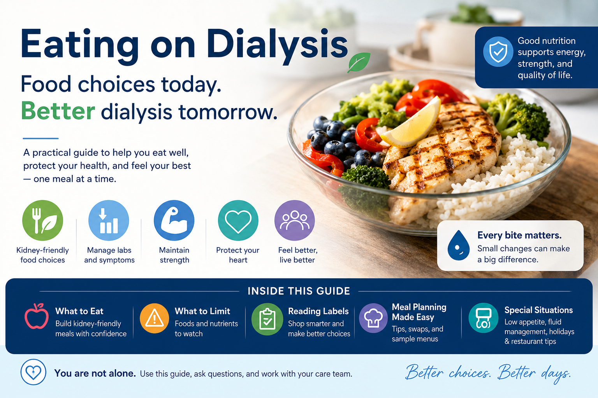
Why the Rules Change When You Start DialysisBakit Nagbabago ang mga Patakaran Kapag Nagsimula Ka ng DialysisNganong Nagbag-o ang mga Lagda sa Pagsugod Nimo og DialysisBakit Nagbabago ing mga Tuntunin Kaibat Mong Magsimula ng Dialysis
Before dialysis, your nephrologist likely told you to limit protein. That advice was sound — a lower protein diet reduces the amount of waste your kidneys need to filter, slowing scarring and delaying progression. The same logic applied to phosphorus and potassium: reduce the load, protect what kidney function remains.Bago ang dialysis, malamang na sinabihan ka ng iyong nephrologist na limitahan ang protina. Ang payo na iyon ay tama — ang mas mababang diyeta sa protina ay nagbabawas ng dami ng basura na kailangang i-filter ng iyong mga bato, nagpapabagal ng pagkapoot at nagpapaliban ng pagkasama. Ang parehong lohika ay naaangkop sa phosphorus at potassium: bawasan ang karga, protektahan ang natitirang kakayahan ng bato.Sa wala pa ang dialysis, lagmit nga gisultihan ka sa imong nephrologist nga limitahan ang protina. Husto ang tambag nga adto — ang mas ubos nga protina sa pagkaon nagpakunhod sa kadaghanon sa basura nga kinahanglang i-filter sa imong mga kidney, nagpachay sa pagkapgas ug nagpalangan sa pag-uswag. Ang mao nga lohika gipadapat usab sa phosphorus ug potassium: kusgon ang karga, panalipdan ang nahibilin nga kakayahan sa kidney.Bayu ning dialysis, malagyang sinabihan ka ning iyong nephrologist a limitahan ing protina. Matuwid ya ing payung iyan — ing mas mababa diyeta king protina ay nagpababa ning dami ning basura a kailangang i-filter ning iyong mga bato, nagpapabagal ning pag-usbuk at nagpapaliban ning pagpalala. Ing mismung lohika ay naglapat king phosphorus at potassium: bawasan ing karga, protektahan ing natira pang kakayahan ning bato.
Once you are on dialysis, the machine replaces that filtering work. The entire equation reverses. Continuing strict pre-dialysis restrictions when you are on dialysis does not protect you — it leads to malnutrition, muscle loss, infections, and a higher risk of dying.Kapag nagsimula ka na ng dialysis, pinalitan ng makina ang trabahong pag-filter na iyon. Bumabaliktad ang buong equation. Ang patuloy na mahigpit na paghihigpit bago ang dialysis habang ikaw ay nasa dialysis ay hindi ka pinoprotektahan — ito ay humahantong sa malnuwisyon, pagkawala ng kalamnan, impeksyon, at mas mataas na panganib ng kamatayan.Sa diha nga naa ka na sa dialysis, ang makina nagpuli sa trabaho sa pag-filter. Ang tibuok equation nagbaligtad. Ang pagpadayon sa mahigpit nga mga pagdili sa wala pa ang dialysis samtang naa ka sa dialysis dili magpanalipod kanimo — kini modala sa malnutrition, pagkawala sa kaunuran, impeksyon, ug mas taas nga peligro sa kamatayon.Kaibat mong nasa dialysis na, ing makina ay pinalitan na ing trabahu ning pag-filter. Bumabalik ing buung equation. Ing pagpatupad pa ring mahigpit na paghigpit bago ning dialysis habang nasa dialysis ka ay ali ka pinoprotektahan — iyan ay nagdudulot ning malnutrition, pagkawala ning kalamnan, impeksyon, at mas mataas na panganib ning kamatayan.
This is not a fringe opinion. It is the consensus position of every major renal nutrition guideline published in the last decade. And yet many dialysis patients in the Philippines — and around the world — are still following the diet they were given years before dialysis started.Hindi ito isang marginyal na opinyon. Ito ang posisyon ng konsensus ng bawat pangunahing alituntunin sa nutrisyon ng bato na inilathala sa nakaraang sampung taon. Gayunpaman, maraming dialysis patients sa Pilipinas — at sa buong mundo — ay sumusunod pa rin sa diyeta na ibinigay sa kanila ng ilang taon bago magsimula ang dialysis.Dili kini usa ka marginal nga opinyon. Mao kini ang posisyon sa consensus sa matag dakong giya sa nutrisyon sa kidney nga gipatik sa miaging napulo ka tuig. Apan daghan pa gihapon nga mga pasyente sa dialysis sa Pilipinas — ug sa tibuok kalibutan — nagsunod pa gihapon sa diyeta nga gihatag kanila mga tuig ayha magsugod ang dialysis.Ali iti marginal na opinyon. Iti ya ing posisyon ning consensus ning balang pangunahing gabay sa nutrisyon ning bato a inilathala keng nakaraang sampung banwa. Datapwa daghan pang mga pasyente ning dialysis sa Pilipinas — at sa buung mundo — ay sumusunod pa ring sa diyeta a ibinigay kekuang ilang banwa bago magsimula ing dialysis.
A Nutritional Turning PointIsang Mahalagang Pagbabago sa NutrisyonUsa ka Mahalagang Pagbag-o sa NutrisyonIsang Mahalagang Pagbabago king Nutrisyon
Starting dialysis is not the time to eat less — it is the time to eat smarter. The diet that protected your kidneys before dialysis can harm you once the machine is doing the filtering work.Ang pagsisimula ng dialysis ay hindi ang tamang oras para kumain nang mas kaunti — ito ang tamang oras para kumain nang mas matalino. Ang diyeta na nagprotekta sa iyong mga bato bago ang dialysis ay maaaring makapinsala sa iyo kapag ang makina na ang gumagawa ng trabahong pag-filter.Ang pagsugod sa dialysis dili ang panahon sa pagkaon ug diyutay — kini ang panahon sa pagkaon ug mas maalamon. Ang diyeta nga nagpanalipod sa imong mga kidney ayha ang dialysis mahimong makadaot kanimo sa higayon nga ang makina na ang nagbuhat sa trabaho sa pag-filter.Ing pagsisimula ning dialysis ali ya ing oras para kumain nang mas kaunti — iti ya ing oras para kumain nang mas matalino. Ing diyeta a nagprotekta king iyong mga bato bago ning dialysis ay maaaring makasama sa iyo kapag ing makina na ing gumagawa ning trabahung pag-filter.
Before Dialysis (CKD Stages 3–5)Bago ang Dialysis (CKD Stages 3–5)Ayha sa Dialysis (CKD Stages 3–5)Bago ning Dialysis (CKD Stages 3–5)
- Restrict protein (0.6–0.8 g/kg/day)Limitahan ang protina (0.6–0.8 g/kg/day)Limitahan ang protina (0.6–0.8 g/kg/day)Limitahan ing protina (0.6–0.8 g/kg/day)
- Limit phosphorus to reduce CKD-MBD riskLimitahan ang phosphorus upang bawasan ang panganib ng CKD-MBDLimitahan ang phosphorus aron mapakgang ang peligro sa CKD-MBDLimitahan ing phosphorus para bawasan ing panganib ning CKD-MBD
- Restrict potassium based on blood levelsLimitahan ang potassium batay sa antas ng dugoLimitahan ang potassium base sa lebel sa dugoLimitahan ing potassium base king antas ning dugo
- Reduce fluid if edema is presentBawasan ang likido kung may edemaPagkunhora ang likido kung adunay edemaBawasan ing likido nung mayroon edema
- Goal:Layunin:Tumong:Tungulan: Slow disease progressionPabagalin ang pag-unlad ng sakitPaghinaya sa pag-uswag sa sakitPabagalin ing pagpalala ning sakit
On Dialysis (HD or PD)Sa Dialysis (HD o PD)Sa Dialysis (HD o PD)King Dialysis (HD o PD)
- Increase protein (≥1.2 g/kg/day)Dagdagan ang protina (≥1.2 g/kg/day)Duganon ang protina (≥1.2 g/kg/day)Dagdagan ing protina (≥1.2 g/kg/day)
- Manage phosphorus with binders — not just restrictionPamahalaan ang phosphorus gamit ang mga binder — hindi lang paghihigpitPagdumala sa phosphorus pinaagi sa mga binder — dili lang pagdiliPangasiwa ing phosphorus gamit ing mga binder — ali lang paghigpit
- Individualize potassium — not everyone needs strict limitsI-individualize ang potassium — hindi lahat ay nangangailangan ng mahigpit na limitasyonI-individualize ang potassium — dili tanan nagkinahanglan og mahigpit nga limitasyonI-individualize ing potassium — ali ding lahat kailangan ning mahigpit na limitasyon
- Calibrate fluid to your urine output and sessionsI-calibrate ang likido ayon sa iyong output ng ihi at mga sessionI-calibrate ang likido sa imong output sa ihi ug mga sesyonI-calibrate ing likido base king iyong output ning ihi at mga sesyon
- Goal:Layunin:Tumong:Tungulan: Prevent malnutrition, maintain muscle massPigilan ang malnutrition, mapanatili ang kalamnanPaglikay sa malnutrition, pagmentinar sa kaunuranPigilan ing malnutrition, mapanatili ing kalamnan
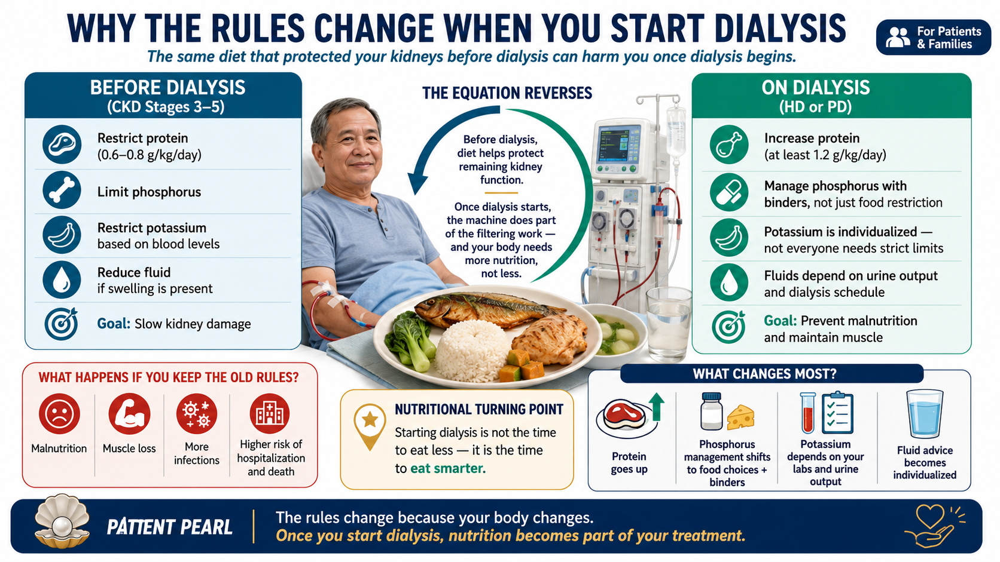
Protein — You Actually Need MoreProtina — Kailangan Mo Talagang Mas MaramiProtina — Kinahanglan Nimo og Mas DaghanProtina — Kailangan Mo Talagang Mas Damo
Every hemodialysis session removes 10–12 grams of amino acids directly from your bloodstream. On top of that, the dialysis process itself triggers inflammation that causes your body to break down muscle for fuel. This is called a catabolic state — and it means you need more protein than almost anyone else, not less.Bawat session ng hemodialysis ay nag-aalis ng 10–12 gramo ng amino acids nang direkta mula sa iyong daloy ng dugo. Dagdag pa rito, ang proseso mismo ng dialysis ay nagpapagana ng pamamaga na nagpapasira ng kalamnan upang magsilbing gatong. Ito ay tinatawag na catabolic state — at nangangahulugang kailangan mo ng mas maraming protina kaysa sa halos kahit sino, hindi mas kaunti.Ang matag sesyon sa hemodialysis nagkuha og 10–12 gramo sa mga amino acid direkta gikan sa imong daloy sa dugo. Dugang pa, ang proseso mismo sa dialysis nagpagana sa pamamaga nga nagpabuak sa kaunuran alang sa sugnod. Gitawag kini og catabolic state — ug nagpasabot kini nga kinahanglan nimo og mas daghan nga protina kaysa sa halos bisan kinsa, dili mas diyutay.Balang sesyon ning hemodialysis ay nag-aalis ning 10–12 gramo ning mga amino acid nang diretso mula king iyong daloy ning dugo. Dagdag pa rito, ing proseso mismo ning dialysis ay nagpapalabas ning pamamaga a nagpapasira ning kalamnan para gamitin bilang gatong. Iti ay tinatawag na catabolic state — at ibig sabihin ay kailangan mong mas daming protina kaysa sa halos sinuman, ali mas kaunti.
KDOQI 2020 (the gold-standard US kidney nutrition guidelines) recommends at least 1.2 grams of protein per kilogram of body weight per day for hemodialysis patients. For peritoneal dialysis patients, the target is slightly higher — 1.2 to 1.3 g/kg/day — because protein also leaks into the PD fluid.Inirerekomenda ng KDOQI 2020 (ang pinaka-pamantayang alituntunin sa nutrisyon ng bato sa US) ang hindi bababa sa 1.2 gramo ng protina bawat kilogramo ng timbang ng katawan bawat araw para sa mga pasyente ng hemodialysis. Para sa mga pasyente ng peritoneal dialysis, ang target ay bahagyang mas mataas — 1.2 hanggang 1.3 g/kg/day — dahil ang protina ay tumatagos din sa PD fluid.Ang KDOQI 2020 (ang gold-standard nga giya sa nutrisyon sa kidney sa US) nagrekomendar og labing menos 1.2 gramo sa protina bawat kilogramo sa timbang sa lawas bawat adlaw alang sa mga pasyente sa hemodialysis. Alang sa mga pasyente sa peritoneal dialysis, ang target mas taas og gamay — 1.2 hangtod 1.3 g/kg/day — tungod kay ang protina nagtulo usab sa PD fluid.Inirerekomenda ning KDOQI 2020 (ing gold-standard na gabay sa nutrisyon ning bato sa US) ing hindi bababa sa 1.2 gramo ning protina bawat kilogramo ning timbang ning katawan bawat araw para king mga pasyente ning hemodialysis. Para king mga pasyente ning peritoneal dialysis, ing target ay kaunting mas mataas — 1.2 hanggang 1.3 g/kg/day — dahil ing protina ay tumutulo rin sa PD fluid.
For a 60 kg person on hemodialysis, that is 72 grams of protein per day — roughly double what many patients were told to eat before starting dialysis.Para sa isang taong 60 kg na nasa hemodialysis, iyon ay 72 gramo ng protina bawat araw — halos doble ng sinabi sa maraming pasyente na kainin bago magsimula ng dialysis.Alang sa usa ka tawo nga 60 kg nga naa sa hemodialysis, mao kini ang 72 gramo sa protina bawat adlaw — halos doble sa giingon sa daghang pasyente nga kan-on ayha magsugod sa dialysis.Para king isang taung 60 kg na nasa hemodialysis, iyun ay 72 gramo ning protina bawat araw — halos doble ning sinabi sa daming pasyente a kainin bago magsimula ng dialysis.
Practical Target for a 60 kg PatientPraktikal na Target para sa Pasyenteng 60 kgPraktikal nga Target alang sa Pasyente nga 60 kgPraktikal na Target para king Pasyenteng 60 kg
3 eggs (18 g) + 100 g cooked chicken breast (31 g) + 100 g fresh fish (21 g) = approximately 70 g protein. That is roughly on target for a 60 kg hemodialysis patient. You do not need expensive supplements to meet your protein goal — fresh local food works.3 itlog (18 g) + 100 g lutong dibdib ng manok (31 g) + 100 g sariwang isda (21 g) = humigit-kumulang 70 g protina. Iyon ay halos tamang target para sa isang pasyente ng hemodialysis na 60 kg. Hindi mo kailangan ng mamahaling mga supplement para matugunan ang iyong layunin sa protina — gumagana ang sariwang lokal na pagkain.3 itlog (18 g) + 100 g giluto nga dibdib sa manok (31 g) + 100 g sariwang isda (21 g) = mga 70 g protina. Hapit na kana sa target alang sa usa ka pasyente sa hemodialysis nga 60 kg. Wala kang kinahanglan og mahal nga mga supplement aron matuod ang imong tumong sa protina — nagtrabaho ang sariwang lokal nga pagkaon.3 itlog (18 g) + 100 g nilutong dibdib ning manuk (31 g) + 100 g sariwang isda (21 g) = mga 70 g protina. Iyan ay halos tama pang target para king isang pasyente ning hemodialysis na 60 kg. Ali ka kailangan ning mamahaling mga supplement para matupad ing iyong layunin sa protina — gumagana ing sariwang lokal na pagkain.
Best Protein Sources for Dialysis PatientsPinakamahusay na Pinagkukunan ng Protina para sa mga Pasyente ng DialysisPinakamayong Tinubdan sa Protina alang sa mga Pasyente sa DialysisPinakamayap na Pinagkukunan ning Protina para king mga Pasyente ning Dialysis
| FoodPagkainPagkaonPamangan | Protein per ServingProtina bawat ServingProtina bawat ServingProtina bawat Serving | NotesMga TalaMga SulatMga Tala |
|---|---|---|
| Eggs (2 large)Itlog (2 malalaki)Itlog (2 dakong)Itlog (2 maragul) | 12 g | Excellent biological value; affordable; lower phosphorus than meatNapakagandang biological value; abot-kaya; mas mababang phosphorus kaysa sa karneMaayo kaayo nga biological value; barato; mas ubos nga phosphorus kaysa sa karneNapakagandang biological value; abot-kaya; mas mabang phosphorus kaysa king karne |
| Chicken breast (100 g cooked)Dibdib ng manok (100 g niluto)Dibdib sa manok (100 g giluto)Dibdib ning manuk (100 g niluto) | 31 g | Lean; versatile; choose fresh, not processed or marinatedPayat; maraming gamit; pumili ng sariwa, hindi naproseso o naka-marinateLimpyo; versatile; pilia ang sariwa, dili naproseso o naka-marinatePayat; maraming gamit; pumili ning sariwa, ali naproseso o naka-marinate |
| Pork loin (100 g cooked)Lomo ng baboy (100 g niluto)Lomo sa baboy (100 g giluto)Lomo ning baboy (100 g niluto) | 27 g | Fine in moderate amounts; avoid processed pork (tocino, longganisa, hotdog)Ayos sa katamtamang dami; iwasan ang naprosesong baboy (tocino, longganisa, hotdog)Maayo sa katamtamang gidaghanon; likayi ang naproseso nga baboy (tocino, longganisa, hotdog)Ayus sa katamtamang dami; likasin ing naprosesong baboy (tocino, longganisa, hotdog) |
| Tilapia or bangus, fresh (100 g)Tilapia o bangus, sariwa (100 g)Tilapia o bangus, sariwa (100 g)Tilapia o bangus, sariwa (100 g) | 20–22 g | Good affordable local option; choose fresh or frozen, not dried or saltedMagandang abot-kayang lokal na pagpipilian; pumili ng sariwa o frozen, hindi tuyo o inasnanMaayo nga baratong lokal nga kapilian; pilia ang sariwa o frozen, dili tuyo o inasnanMayap at abot-kayang lokal na pagpipilian; pumili ning sariwa o frozen, ali tuyo o inasnan |
| Fresh tofu (100 g)Sariwang tofu (100 g)Sariwang tofu (100 g)Sariwang tofu (100 g) | 8 g | Plant protein; lower phosphorus absorption due to phytate binding; affordableProtina mula sa halaman; mas mababang pagsipsip ng phosphorus dahil sa phytate binding; abot-kayaProtina gikan sa tanum; mas ubos nga pagsipsip sa phosphorus tungod sa phytate binding; baratoProtina mula king halaman; mas mababang pagsipsip ning phosphorus dahil sa phytate binding; abot-kaya |
| Beans/legumes (½ cup cooked)Beans/legumes (½ tasa niluto)Beans/legumes (½ tasa giluto)Beans/legumes (½ tasa niluto) | 7–9 g | Also high in potassium — eat in moderation; boil and drain water before eatingMataas din sa potassium — kumain nang katamtaman; pakuluanin at itapon ang tubig bago kumainTaas usab sa potassium — kan-on sa katamtaman; lutoha ug ibubo ang tubig ayha mokaonMataas din king potassium — kumain nang katamtaman; pakuluan at itapon ing tubig bago kumain |
Watch Out for ProcessingMag-ingat sa mga Naprosesong PagkainPag-amping sa mga Naproseso nga PagkaonMag-ingat king mga Naprosesong Pamangan
Dried fish (tuyo, danggit, tinapa), processed meats (hotdog, tocino, longganisa), and canned goods are high in sodium and inorganic phosphorus additives. Even though they are high in protein, the additives cause more phosphorus absorption than fresh meat. Limit these and favor fresh protein sources.Ang mga tuyong isda (tuyo, danggit, tinapa), naprosesong karne (hotdog, tocino, longganisa), at mga de-lata ay mataas sa sodium at inorganic phosphorus additives. Kahit na mataas sila sa protina, ang mga additives ay nagdudulot ng mas maraming pagsipsip ng phosphorus kaysa sa sariwang karne. Limitahan ang mga ito at bigyang-kagustuhan ang mga sariwang pinagkukunan ng protina.Ang mga bulad nga isda (tuyo, danggit, tinapa), naproseso nga karne (hotdog, tocino, longganisa), ug mga de-lata taas sa sodium ug inorganic phosphorus additives. Bisan taas sila sa protina, ang mga additives nagpahinabo og mas daghan nga pagsipsip sa phosphorus kaysa sa sariwang karne. Limitahan kini ug paboran ang mga sariwang tinubdan sa protina.Ing mga tuyung isda (tuyo, danggit, tinapa), naprosesong karne (hotdog, tocino, longganisa), at mga de-lata ay mataas king sodium at inorganic phosphorus additives. Kahit mataas sila king protina, ing mga additives ay nagdudulot ning mas maraming pagsipsip ning phosphorus kaysa king sariwang karne. Limitahan ini at bigyang-kagustuhan ing mga sariwang pinagkukunan ning protina.
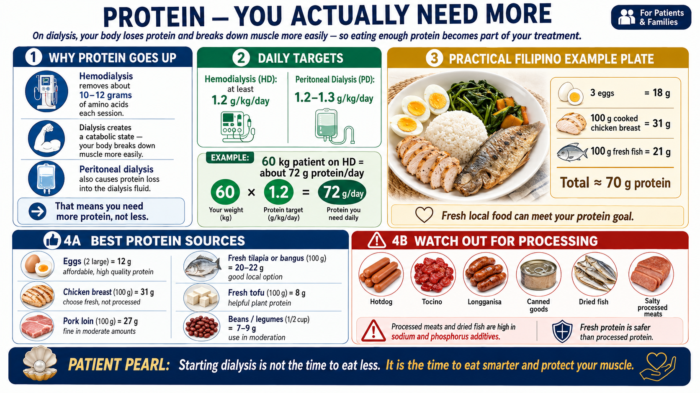
Phosphorus — Not All Sources Are EqualPhosphorus — Hindi Lahat ng Pinagkukunan ay PantayPhosphorus — Dili Tanan nga Tinubdan ManagsamaPhosphorus — Ali Lahat ning Pinagkukunan ay Pantay
Phosphorus is not just phosphorus. Where it comes from matters as much as how much you eat — because different food sources absorb into your bloodstream at very different rates.Ang phosphorus ay hindi lang phosphorus. Kung saan ito nanggagaling ay kasinghalaga ng kung gaano karami ang iyong kinakain — dahil ang iba't ibang pinagkukunan ng pagkain ay nasisipsip sa iyong daloy ng dugo sa napaka-ibang bilis.Ang phosphorus dili lang phosphorus. Kung asa kini nagagikan importante kaayo sama sa kung pila ka ang imong gikaon — tungod kay ang lain-laing tinubdan sa pagkaon nagsipsip sa imong daloy sa dugo sa lain-laing bilis.Ing phosphorus ali lang phosphorus. Kung nung saan ito nanggagaling ay kasinghalaga ning kung magkano ing iyong kinakain — dahil ing iba-ibang pinagkukunan ning pamangan ay nasisipsip king iyong daloy ning dugo sa napaka-ibang bilis.
Inorganic Phosphorus = Highest RiskInorganic Phosphorus = Pinakamataas na PanganibInorganic Phosphorus = Pinakataas nga PeligroInorganic Phosphorus = Pinakamataas na Panganib
Food additive phosphorus (polyphosphates, phosphoric acid) absorbs 90–100% into your blood. This is the phosphorus added to instant noodles, processed meats, cola drinks, and flavored chips — not the phosphorus naturally found in fresh meat. It is the biggest phosphorus threat for dialysis patients and the most important to avoid.Ang phosphorus na food additive (polyphosphates, phosphoric acid) ay nasisipsip ng 90–100% sa iyong dugo. Ito ang phosphorus na idinagdag sa instant noodles, naprosesong karne, cola drinks, at flavored chips — hindi ang phosphorus na natural na makikita sa sariwang karne. Ito ang pinakamalaking banta ng phosphorus para sa mga pasyente ng dialysis at ang pinakamahalagang iwasan.Ang phosphorus nga food additive (polyphosphates, phosphoric acid) nagsipsip og 90–100% sa imong dugo. Mao kini ang phosphorus nga gidugang sa instant noodles, naproseso nga karne, cola drinks, ug flavored chips — dili ang phosphorus nga natural nga makita sa sariwang karne. Mao kini ang pinakadakog hulga sa phosphorus alang sa mga pasyente sa dialysis ug ang pinakaimportante nga likayon.Ing phosphorus na food additive (polyphosphates, phosphoric acid) ay nasisipsip ning 90–100% king iyong dugo. Ini ya ing phosphorus a idinagdag sa instant noodles, naprosesong karne, cola drinks, at flavored chips — ali ya ing phosphorus na natural na makita king sariwang karne. Iti ya ing pinakadakal na banta ning phosphorus para king mga pasyente ning dialysis at ing pinakamahalagang likasin.
Understanding Phosphorus SourcesPag-unawa sa mga Pinagkukunan ng PhosphorusPagsabut sa mga Tinubdan sa PhosphorusPag-intindi ning mga Pinagkukunan ning Phosphorus
| Source TypeUri ng PinagkukunanKlase sa TinubdanKlase ning Pinagkukunan | ExamplesMga HalimbawaMga PananglitanMga Halimbawa | AbsorptionPagsipsipPagsipsipPagsipsip | What to DoAno ang GagawinUnsa ang BuhatonNanu ing Gawan |
|---|---|---|---|
| Inorganic additivesInorganic additivesInorganic additivesInorganic additives | Instant noodles, hotdog, tocino, cola drinks, flavored chips, powdered drinksInstant noodles, hotdog, tocino, cola drinks, flavored chips, powdered drinksInstant noodles, hotdog, tocino, cola drinks, flavored chips, powdered drinksInstant noodles, hotdog, tocino, cola drinks, flavored chips, powdered drinks | 90–100% | Avoid or strictly limitIwasan o mahigpit na limitahanLikayi o mahigpit nga limitahanLikasin o mahigpit a limitahan |
| Animal (organic)Hayop (organic)Hayop (organic)Hayop (organic) | Fresh meat, fish, eggs, dairySariwang karne, isda, itlog, mga produktong gatasSariwang karne, isda, itlog, mga produkto sa gatasSariwang karne, isda, itlog, mga produktong gatas | 40–60% | Eat moderate portions; always take binder with mealsKumain ng katamtamang bahagi; laging uminom ng binder kasabay ng pagkainKan-a ang katamtamang bahin; kanunay nga kumuha og binder kauban ang pagkaonKumain ning katamtamang bahagi; laging uminum ning binder kasabay ning pamangan |
| Plant (organic)Halaman (organic)Tanum (organic)Halaman (organic) | Beans, nuts, whole grains, seedsBeans, mani, buong butil, binhiBeans, mani, tibuok nga butil, binhiBeans, mani, buung butil, butil | 20–40% | Lowest risk — phytate in plant foods blocks absorptionPinakamababang panganib — ang phytate sa mga pagkaing halaman ay humahadlang sa pagsipsipPinakaubos nga peligro — ang phytate sa mga pagkaon gikan sa tanum nagbabag sa pagsipsipPinakamabang panganib — ing phytate king mga pamanganing halaman ay humahadlang king pagsipsip |
Phosphate Binders — Take Them at the Right TimePhosphate Binders — Inumin sa Tamang OrasPhosphate Binders — Inumon sa Hustong OrasPhosphate Binders — Inuman king Tamang Oras
Take your binder with the first bites of each mealInumin ang iyong binder kasabay ng unang subo ng bawat kainKumuha sa imong binder uban sa unang kagat sa matag kaonInuman ing iyong binder kasabay ning maunan a subo ning balang pamangan
Not before eating, and not after finishing the meal. The binder must be in your stomach at the same time as the food to trap phosphorus before it gets absorbed.Hindi bago kumain, at hindi pagkatapos maubos ang pagkain. Ang binder ay dapat nasa iyong tiyan nang sabay sa pagkain upang mahuli ang phosphorus bago ito masipsip.Dili ayha mokaon, ug dili human mahuman ang pagkaon. Ang binder kinahanglan nga anaa sa imong tiyan sa mao usab nga oras sa pagkaon aron mahuptan ang phosphorus ayha kini masipsip.Ali bago kumain, at ali pagkatapos maubos ing pamangan. Ing binder ay dapat nasa iyong tiyan sabay ning pamangan para mahuli ing phosphorus bago ito masipsip.
Take a binder with large snacks tooUminom din ng binder kasabay ng malalaking meryendaKumuha usab og binder kauban ang mga dakong snackUminum ding binder kasabay ning malalaking meryenda
Not just main meals. Any snack that contains protein or phosphorus — a glass of milk, eggs, crackers with peanut butter — needs a binder alongside it.Hindi lang mga pangunahing pagkain. Ang anumang meryenda na naglalaman ng protina o phosphorus — isang baso ng gatas, itlog, crackers na may peanut butter — ay nangangailangan ng binder kasabay nito.Dili lang mga pangunahing pagkaon. Ang bisan unsang snack nga adunay protina o phosphorus — usa ka basong gatas, itlog, crackers uban ang peanut butter — nagkinahanglan og binder kauban kini.Ali lang mga pangunahing pamangan. Ing anumang meryenda a naglalaman ning protina o phosphorus — isang basong gatas, itlog, crackers na may peanut butter — ay kailangan ning binder kasabay nito.
No binder needed for very small snacksHindi kailangan ng binder para sa napakaliit na meryendaWalay kinahanglang binder alang sa gamayng snackAli kailangan ning binder para king napakaliit na meryenda
Plain water, black coffee or tea (no milk), and small low-phosphorus snacks like plain rice crackers do not require a binder.Ang simpleng tubig, itim na kape o tsaa (walang gatas), at maliliit na meryendang mababa sa phosphorus tulad ng simpleng rice crackers ay hindi nangangailangan ng binder.Ang simpleng tubig, itom nga kape o tsaa (walay gatas), ug gagmayng mababa sa phosphorus nga snack sama sa simpleng rice crackers dili nagkinahanglan og binder.Ing simpleng tubig, itum na kape o tsaa (alang gatas), at maliliit na mabang phosphorus na meryenda tulad ning simpleng rice crackers ay ali nangangailangan ning binder.
The Most Common Binder MistakeAng Pinakakaraniwang Pagkakamali sa BinderAng Pinaka-kasagaran nga Sayop sa BinderIng Pinaka-kasagaran a Pagkakamali king Binder
Taking your phosphate binder before meals or after finishing is the single most common error. The binder works inside your digestive system, not your bloodstream — it has to be there when the food arrives.Ang pag-inom ng iyong phosphate binder bago kumain o pagkatapos maubos ay ang pinakakaraniwang pagkakamali. Ang binder ay gumagana sa loob ng iyong digestive system, hindi sa iyong daloy ng dugo — kailangan itong nandoon kapag dumating ang pagkain.Ang pagkuha sa imong phosphate binder ayha mokaon o human mahuman ang pinaka-kasagaran nga sayop. Ang binder nagtrabaho sulod sa imong digestive system, dili sa imong daloy sa dugo — kinahanglan anaa kini sa higayon nga moabot ang pagkaon.Ing pag-inum ning iyong phosphate binder bago kumain o pagkatapos maubos ay ing pinakakaraniwang pagkakamali. Ing binder ay gumagana sa loob ning iyong digestive system, ali sa iyong daloy ning dugo — kailangan nandoon ito kapag dumating ing pamangan.
Common Phosphate Binders in the PhilippinesMga Karaniwang Phosphate Binders sa PilipinasMga Kasagaran nga Phosphate Binders sa PilipinasMga Karaniwang Phosphate Binders sa Pilipinas
Calcium carbonate (generic tablets, approximately ₱2–5 per tablet) is the most affordable and widely available. Sevelamer (Renvela) and lanthanum carbonate (Fosrenol) are available at major pharmacies and are used when calcium levels are already elevated. Your nephrologist prescribes the right one based on your labs — do not switch without asking.Ang calcium carbonate (generic tablets, humigit-kumulang ₱2–5 bawat tablet) ay ang pinakamurang at pinakamalawak na magagamit. Ang sevelamer (Renvela) at lanthanum carbonate (Fosrenol) ay makukuha sa mga pangunahing parmasya at ginagamit kapag ang antas ng calcium ay mataas na. Ang iyong nephrologist ang mag-aatas ng tamang uri batay sa iyong mga lab — huwag magpalit nang hindi nagtatanong.Ang calcium carbonate (generic tablets, mga ₱2–5 bawat tablet) ang pinaka-barato ug mas daghan. Ang sevelamer (Renvela) ug lanthanum carbonate (Fosrenol) anaa sa mga dakong parmasya ug gigamit kung ang lebel sa calcium taas na. Ang imong nephrologist mag-orden sa husto base sa imong mga lab — ayaw mag-ilis nga wala mangutana.Ing calcium carbonate (generic tablets, mga ₱2–5 bawat tablet) ay ing pinakamurang at pinakamaraming makukuha. Ing sevelamer (Renvela) at lanthanum carbonate (Fosrenol) ay makukuha sa mga pangunahing parmasya at ginagamit kapag ing antas ning calcium ay mataas na. Ing iyong nephrologist ing mag-aatas ning tamang uri base king iyong mga lab — ali magpalit nang ali nagtatanong.
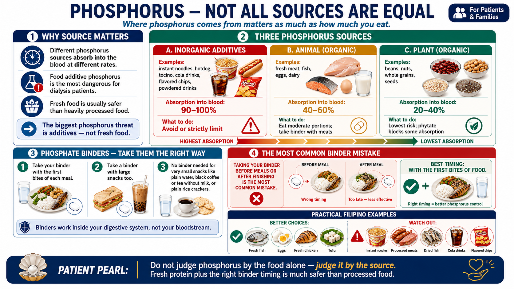
Potassium — It Depends on YouPotassium — Nakasalalay sa IyoPotassium — Nagdepende Kini sa Imong SitwasyonPotassium — Nakasalalay King Kayu
Not everyone on dialysis needs the same potassium restriction. How strict your limit needs to be depends on several personal factors — how much urine you still produce, how often you dialyze, how complete your sessions are, and how much weight you gain between sessions.Hindi lahat ng nasa dialysis ay nangangailangan ng parehong paghihigpit sa potassium. Kung gaano kahigpit ang kailangan ng iyong limitasyon ay nakasalalay sa ilang personal na salik — kung gaano karaming ihi pa ang iyong nalilikha, kung gaano kadalas ka nag-dialyze, kung gaano kasagana ang iyong mga session, at kung gaano karaming timbang ang iyong nakukuha sa pagitan ng mga session.Dili tanan nga naa sa dialysis nagkinahanglan sa mao nga pagdili sa potassium. Kung unsa ka grabe ang imong limitasyon nagdepende sa pipila ka personal nga kadungganan — kung pila ka ang imong ihi, kung unsa ka kasagad ang imong dialysis, kung unsa ka kasagana ang imong mga sesyon, ug kung pila ka ang timbang nga imong naangkon tali sa mga sesyon.Ali lahat ning nasa dialysis ay nangangailangan ning parehong paghigpit sa potassium. Kung magkano kahigpit ing kailangan ning iyong limitasyon ay nakasalalay king ilang personal na salik — kung magkano pang ihi ing iyong nalilikha, kung magkano kadalas ka nag-dialyze, kung magkano kasagana ing iyong mga sesyon, at kung magkano timbang ing iyong natatanggap sa pagitan ning mga sesyon.
A patient who still makes one liter of urine per day can generally eat more potassium than someone who makes none at all. A patient on three-times-a-week dialysis with a fully mature fistula and consistently good Kt/V may have more flexibility than someone with frequent missed sessions or access problems.Ang pasyenteng gumagawa pa ng isang litro ng ihi bawat araw ay karaniwang makakakain ng mas maraming potassium kaysa sa taong walang ihi. Ang pasyenteng nasa tatlong beses sa isang linggong dialysis na may ganap na hinog na fistula at pare-parehong magandang Kt/V ay maaaring magkaroon ng mas maraming kakayahang umangkop kaysa sa taong madalas lumiban sa session o may mga problema sa access.Ang pasyente nga nagahimo pa og usa ka litro sa ihi bawat adlaw mahimong mokaon og mas daghan nga potassium kaysa sa usa nga walay ihi. Ang pasyente sa tulo ka beses kada semana nga dialysis nga adunay hingpit nga mature nga fistula ug kanunay nga maayo nga Kt/V mahimong adunay mas daghan nga kakuyog kaysa sa usa nga kanunay nawala sa sesyon o may problema sa access.Ing pasyenteng gumagawa pang isang litro ning ihi bawat araw ay karaniwang makakakaing mas maraming potassium kaysa king taung walang ihi. Ing pasyenteng nasa tatlong beses sa isang linggu ning dialysis na may ganap na hinog na fistula at pare-parehong mayap na Kt/V ay maaaring magkaroon ning mas maraming kakayahang umangkop kaysa king taung madalas lumiban sa sesyon o may mga problema sa access.
The key is checking your blood potassium level regularly and working with your nephrologist to set your personal target — not applying a blanket restriction taken from pre-dialysis guidelines.Ang susi ay ang regular na pagsuri ng iyong antas ng potassium sa dugo at pakikipagtulungan sa iyong nephrologist upang magtakda ng iyong personal na target — hindi ang pagpapatupad ng pangkalahatang paghihigpit mula sa mga alituntunin bago ng dialysis.Ang yawi mao ang regular nga pagsusi sa imong lebel sa potassium sa dugo ug pagtinabangay sa imong nephrologist aron matukoy ang imong personal nga target — dili ang pagpatuman og blanket nga pagdili gikan sa mga giya ayha sa dialysis.Ing susi ay ing regular na pagsuri ning iyong antas ning potassium sa dugo at pakikipagtulungan sa iyong nephrologist para magtakda ning iyong personal na target — ali ing pagpapatupad ning pangkalahatang paghigpit mula sa mga gabay bago ning dialysis.
Buko Juice WarningBabala Tungkol sa Buko JuicePahimangno Bahin sa Buko JuiceBabala Tungkol king Buko Juice
Coconut water (buko juice) is very high in potassium. It has caused fatal hyperkalemia in dialysis patients who produce little or no urine. It is not a safe "natural drink" for most dialysis patients. Do not drink it without specific clearance from your nephrologist — and get your potassium level checked first.Ang coconut water (buko juice) ay napakataas sa potassium. Nagdulot ito ng nakamamatay na hyperkalemia sa mga pasyente ng dialysis na gumagawa ng kaunti o walang ihi. Hindi ito isang ligtas na "natural na inumin" para sa karamihan ng mga pasyente ng dialysis. Huwag itong inumin nang walang espesipikong pahintulot mula sa iyong nephrologist — at ipasuri muna ang iyong antas ng potassium.Ang tubig sa niyog (buko juice) napataas kaayo sa potassium. Nagpahinabo kini sa fatal hyperkalemia sa mga pasyente sa dialysis nga nagahimo og gamay o walay ihi. Dili kini usa ka luwas nga "natural nga ilimnon" alang sa kadaghanan sa mga pasyente sa dialysis. Ayaw kini iinum nga wala espesipiko nga pagtugot gikan sa imong nephrologist — ug ipasusi una ang imong lebel sa potassium.Ing tubig ning niyog (buko juice) ay napakataas king potassium. Nagdulot ya ning nakamamatay na hyperkalemia sa mga pasyente ning dialysis a gumagawa ning kaunti o walang ihi. Ali ya isang ligtas na "natural na inumin" para king karamihan ning mga pasyente ning dialysis. Ali ya inumin nang walang espesipikong pahintulot mula king iyong nephrologist — at ipasuri muna ing iyong antas ning potassium.
Filipino Foods — Potassium Traffic LightMga Pagkaing Pilipino — Traffic Light ng PotassiumMga Pagkaon sa Pilipino — Traffic Light sa PotassiumMga Pamanganing Pilipino — Traffic Light ning Potassium
| FoodPagkainPagkaonPamangan | Potassium LevelAntas ng PotassiumLebel sa PotassiumAntas ning Potassium | GuidanceGabayGiyaGabay |
|---|---|---|
| White rice (cooked) | LowMababaUbosMababa | Safe — eat normal portions; lower potassium than brown riceLigtas — kumain ng normal na bahagi; mas mababang potassium kaysa sa brown riceLuwas — kan-a ang normal nga bahin; mas ubos nga potassium kaysa sa brown riceLigtas — kumain ning normal na bahagi; mas mabang potassium kaysa king brown rice |
| Upo, patola, ampalaya | Low–ModerateMababa–KatamtamanUbos–KatamtamanMababa–Katamtaman | Generally safe; boil if uncertainKaraniwang ligtas; pakuluanin kung hindi siguradoSa kadaghanan luwas; lutoha kung dili siguradoKaraniwang ligtas; pakuluan nung ali sigurado |
| Kangkong (water spinach) | ModerateKatamtamanKatamtamanKatamtaman | Boil and discard the cooking water to reduce potassium by ~40%Pakuluanin at itapon ang tubig ng pagluluto upang mabawasan ang potassium ng ~40%Lutoha ug ibubo ang tubig sa pagluto aron mapakgang ang potassium og ~40%Pakuluan at itapon ing tubig ning pagluto para mabawasan ing potassium ng ~40% |
| Apple, grapes, watermelonMansanas, ubas, pakwanMansanas, ubas, pakwanMansanas, ubas, pakwan | Low–ModerateMababa–KatamtamanUbos–KatamtamanMababa–Katamtaman | Better fruit choices; eat in reasonable portionsMas mainam na pagpipilian ng prutas; kumain sa makatwirang bahagiMas maayong pagpili sa prutas; kan-a sa katamtamang bahinMas mayap na pagpipilian ning prutas; kumain sa makatwirang bahagi |
| Malunggay (Moringa leaves) | HighMataasTaasMataas | Limit if potassium is elevated; small boiled amounts onlyLimitahan kung ang potassium ay mataas; maliit na pinakuluang dami lamangLimitahan kung ang potassium taas; gamay nga giluto nga kantidad lamangLimitahan nung ing potassium ay mataas; maliit na pinakuluang dami lamang |
| Kamote (sweet potato) | HighMataasTaasMataas | Limit; boil and discard cooking water; small portionsLimitahan; pakuluanin at itapon ang tubig ng pagluluto; maliit na bahagiLimitahan; lutoha ug ibubo ang tubig sa pagluto; gagmay nga bahinLimitahan; pakuluan at itapon ing tubig ning pagluto; maliit na bahagi |
| Saba banana | HighMataasTaasMataas | Limit; not daily; one small piece occasionallyLimitahan; hindi araw-araw; isang maliit na piraso paminsan-minsanLimitahan; dili adlaw-adlaw; usa ka gamayng piraso sa usahayLimitahan; ali araw-araw; metung maliit na piraso paminsan-minsan |
| Ripe mango, avocadoHinog na mangga, abokadoHinog nga mangga, abokadoHinog na manga, abokado | HighMataasTaasMataas | Limit; small servings onlyLimitahan; maliit na serving lamangLimitahan; gagmayng serving lamangLimitahan; maliit na serving lamang |
| Buko juice (coconut water) | Very HighNapakataasPataas KaayoNapakataas | Avoid if little or no urine output; check with your nephrologistIwasan kung kaunti o walang ihi; kumonsulta sa iyong nephrologistLikayi kung gamay o walay ihi; konsultaha ang imong nephrologistLikasin nung kaunti o walang ihi; kumonsulta sa iyong nephrologist |
The Leaching TrickAng Paraan ng LeachingAng Trick sa LeachingIng Paraan ning Leaching
Boiling vegetables and throwing away the cooking water reduces their potassium content by 30–50%. This works best when vegetables are cut into small pieces and boiled in a large volume of water for at least 10 minutes. Do not steam — steaming does not remove potassium. Do not reuse the cooking water.Ang pagpapaluto ng mga gulay at pagtatapon ng tubig ng pagluluto ay nagbabawas ng kanilang nilalaman ng potassium ng 30–50%. Ito ay pinaka-epektibo kapag ang mga gulay ay pinutol sa maliliit na piraso at niluto sa malaking dami ng tubig ng hindi bababa sa 10 minuto. Huwag mag-steam — ang pag-steam ay hindi nagtatanggal ng potassium. Huwag muling gumamit ng tubig ng pagluluto.Ang pagluto sa mga utanon ug pagtapon sa tubig sa pagluto nagpakunhod sa ilang sulod sa potassium og 30–50%. Kini maayo kaayo sa diha nga ang mga utanon giputol sa gagmayng piraso ug giluto sa daghang tubig sulod sa labing menos 10 minuto. Ayaw og steam — ang pag-steam wala nagkuha sa potassium. Ayaw gamita pag-usab ang tubig sa pagluto.Ing pagpapaluto ning mga gulay at pagtatapon ning tubig ning pagluto ay nagpapababa ning kanilang nilalaman ning potassium ng 30–50%. Iti ay pinaka-epektibo kapag ing mga gulay ay pinutol sa maliliit na piraso at niluto sa malaking dami ning tubig ng hindi bababa sa 10 minuto. Ali mag-steam — ing pag-steam ay ali nagtatanggal ning potassium. Ali muling gumamit ning tubig ning pagluto.
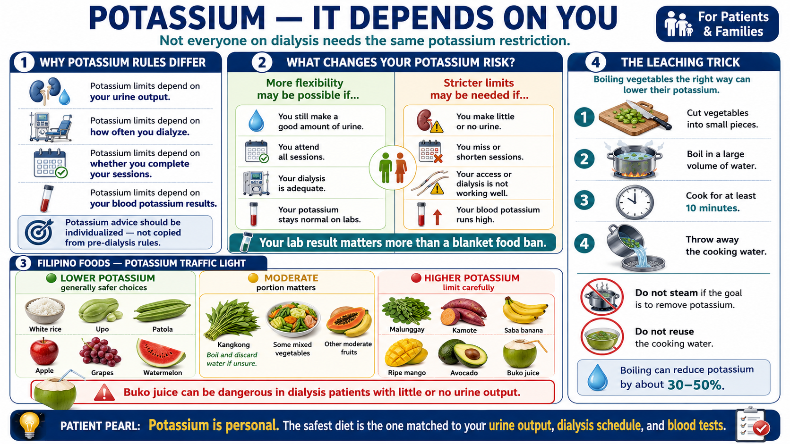
Should You Eat During Dialysis?Dapat Ka Bang Kumain Sa Panahon ng Dialysis?Kinahanglan Ka Bang Mokaon Atol sa Dialysis?Dapat Ka Bang Kumain Keng Oras ning Dialysis?
Yes — and major international guidelines now actively recommend it for patients who are malnourished or at nutritional risk.Oo — at ang mga pangunahing internasyonal na alituntunin ay aktibong inirerekomenda na ito para sa mga pasyenteng malnutrido o nasa panganib sa nutrisyon.Oo — ug ang mga pangunahing internasyonal nga giya aktibo na karon nga nagrekomendar niini alang sa mga pasyente nga malnutrido o naa sa peligro sa nutrisyon.Oo — at ing mga pangunahing internasyonal na gabay ay aktibong inirerekomenda na ito para king mga pasyenteng malnutrido o nasa panganib sa nutrisyon.
The International Society of Renal Nutrition and Metabolism (ISRNM) recommends oral nutritional supplements during hemodialysis sessions as a first-line treatment for protein-energy wasting. The reason: dialysis creates an unusual window where amino acid uptake by your muscles is actually increased. Eating or drinking a protein supplement during this window blunts the protein breakdown that every dialysis session causes.Ang ISRNM ay nagrerekomenda ng mga oral nutritional supplements sa panahon ng mga session ng hemodialysis bilang unang-linyang paggamot para sa protein-energy wasting. Ang dahilan: lumilikha ang dialysis ng hindi karaniwang pagkakataon kung saan ang pagtanggap ng amino acid ng iyong mga kalamnan ay talagang nadaragdagan. Ang pagkain o pag-inom ng protein supplement sa panahong ito ay nagpapabagal ng pagkasira ng protina na dulot ng bawat session ng dialysis.Ang ISRNM nagrekomendar og mga oral nutritional supplements atol sa mga sesyon sa hemodialysis isip unang linya nga pagtambal alang sa protein-energy wasting. Ang hinungdan: ang dialysis nagmugna og dili kasagaran nga bintana diin ang pagsipsip sa amino acid sa imong mga kaunuran aktwal nga gidugang. Ang pagkaon o pag-inom og protein supplement atol niini nga bintana nagpabagal sa pagkabuak sa protina nga gipahinabo sa matag sesyon sa dialysis.Ing ISRNM ay nagrerekomenda ning mga oral nutritional supplements keng oras ning mga sesyon ning hemodialysis bilang unang-linyang paggamot para king protein-energy wasting. Ing dahilan: lumilikha ing dialysis ning hindi karaniwang pagkakataon kung saan ing pagtanggap ning amino acid ning iyong mga kalamnan ay talagang nadaragdagan. Ing pagkain o pag-inum ning protein supplement keng panahong iti ay nagpapabagal ning pagkasira ning protina a dulot ning balang sesyon ning dialysis.
Studies show that patients who receive nutrition during dialysis sessions have higher albumin levels, better muscle mass, and fewer hospitalizations compared to patients who fast through their sessions.Ipinapakita ng mga pag-aaral na ang mga pasyenteng tumatanggap ng nutrisyon sa panahon ng mga session ng dialysis ay may mas mataas na antas ng albumin, mas magandang masa ng kalamnan, at mas kaunting hospitalasyon kumpara sa mga pasyenteng nag-aayuno sa buong session.Gipakita sa mga pagtuon nga ang mga pasyente nga nakadawat og nutrisyon atol sa mga sesyon sa dialysis adunay mas taas nga lebel sa albumin, mas maayo nga masa sa kaunuran, ug menos nga mga ospitalisasyon kumpara sa mga pasyente nga nag-igos sa tibuok ilang mga sesyon.Ipinapakita ning mga pag-aaral a ing mga pasyenteng tumatanggap ning nutrisyon keng oras ning mga sesyon ning dialysis ay may mas mataas na antas ning albumin, mas mayap na masa ning kalamnan, at mas kaunting pag-ospital kumpara king mga pasyenteng nag-aayuno sa buung sesyon.
Your Eating Schedule Around Each SessionAng Iyong Iskedyul ng Pagkain Sa Bawat SessionAng Imong Iskedyul sa Pagkaon Sa Matag SesyonIng Iskedyul Mong Pamangan Sa Balang Sesyon
1–2 Hours Before Dialysis — Light Meal1–2 Oras Bago ang Dialysis — Magaan na Pagkain1–2 Oras Ayha sa Dialysis — Magaan nga Pagkaon1–2 Oras Bago ning Dialysis — Magaan na Pamangan
What:Ano:Unsa:Nanu: 1 regular plate — 1 to 2 eggs or a small piece of fresh fish, white rice, and a boiled or sautéed low-potassium vegetable (upo, patola, labanos). About 300–400 calories total.1 regular na plato — 1 hanggang 2 itlog o maliit na piraso ng sariwang isda, puting kanin, at isang pinakuluang o ginisang gulay na mababa sa potassium (upo, patola, labanos). Mga 300–400 calories sa kabuuan.1 regular nga plato — 1 hangtod 2 itlog o gamayng piraso sa sariwang isda, puting kan-on, ug usa ka giluto o ginisang utanon nga ubos sa potassium (upo, patola, labanos). Mga 300–400 calories ang tibuok.1 regular na plato — 1 hanggang 2 itlog o maliit na piraso ning sariwang isda, maputing kan-in, at isang pinakuluang o ginisang gulay na mabang potassium (upo, patola, labanos). Mga 300–400 calories sa kabuuan.
Why:Bakit:Nganong:Bakit: Going into dialysis fasted raises your risk of a blood pressure drop during the session. A light pre-dialysis meal stabilizes you without overloading your gut right before the machine starts pulling fluid from your blood.Ang pagpasok sa dialysis nang nag-aayuno ay nagpapataas ng iyong panganib ng pagbagsak ng presyon ng dugo sa panahon ng session. Ang magaan na pagkain bago ang dialysis ay nagpapatatag sa iyo nang hindi sinisira ang iyong tiyan bago simulan ng makina ang paghila ng likido mula sa iyong dugo.Ang pagsulod sa dialysis nga nag-igos nagpataas sa imong peligro sa paghulog sa presyon sa dugo atol sa sesyon. Ang magaan nga pagkaon ayha sa dialysis nagpalig-on kanimo nga wala magkarga sa imong tiyan sa wala pa ang makina magsugod og pagkuha sa likido gikan sa imong dugo.Ing pagpasok sa dialysis nang nag-aayuno ay nagpapataas ning iyong panganib ning pagbagsak ning presyon ning dugo keng oras ning sesyon. Ing magaan na pamangan bago ning dialysis ay nagpapatatag sa iyo nang ali sinisira ing iyong tiyan bago simulan ning makina ing paghila ning likido mula king iyong dugo.
Avoid:Iwasan:Likayi:Likasin: Very large meals, high-potassium foods (bananas, malunggay, kamote), and high-sodium food (patis, bagoong, processed meats) — potassium is already accumulating between your sessions.Napakalalaking mga pagkain, mga pagkaing mataas sa potassium (saging, malunggay, kamote), at pagkain na mataas sa sodium (patis, bagoong, naprosesong karne) — ang potassium ay nag-iipon na sa pagitan ng iyong mga session.Kuyaw kadakog mga pagkaon, mga pagkaon nga taas sa potassium (saging, malunggay, kamote), ug pagkaon nga taas sa sodium (patis, bagoong, naproseso nga karne) — ang potassium nagtipon na tali sa imong mga sesyon.Napakalaking mga pamangan, mga pamanganing mataas king potassium (saging, malunggay, kamote), at pamangan na mataas king sodium (patis, bagoong, naprosesong karne) — ing potassium ay nag-iipon na sa pagitan ning iyong mga sesyon.
First 30–60 Minutes of Your Session — Small Snack or ONSUnang 30–60 Minuto ng Iyong Session — Maliit na Meryenda o ONSUnang 30–60 Minuto sa Imong Sesyon — Gagmayng Snack o ONSMaunan 30–60 Minuto ning Iyong Sesyon — Maliit na Meryenda o ONS
What:Ano:Unsa:Nanu: A small, protein-rich snack — not a full meal. The ideal is an oral nutritional supplement (see table below) because it delivers protein and calories in a controlled volume without overloading your gut. If solid food: 2 hard-boiled eggs, or a small sandwich on plain white bread, or a few unsalted crackers with peanut butter.Isang maliit, mayaman sa protinang meryenda — hindi isang buong pagkain. Ang ideal ay isang oral nutritional supplement (tingnan ang talahanayan sa ibaba) dahil nagbibigay ito ng protina at calories sa kontroladong dami nang hindi sinasira ang iyong tiyan. Kung solid na pagkain: 2 itlog na pinakuluan nang mahirap, o isang maliit na sandwich sa simpleng puting tinapay, o ilang crackers na walang asin na may peanut butter.Usa ka gagmay, dato sa protina nga snack — dili usa ka tibuok nga pagkaon. Ang ideal mao ang usa ka oral nutritional supplement (tan-awa ang lamesa sa ubos) tungod kay naghatag kini og protina ug calories sa kontrolado nga gidaghanon nga wala magkarga sa imong tiyan. Kung solid nga pagkaon: 2 hard-boiled nga itlog, o usa ka gagmayng sandwich sa simpleng puting tinapay, o pipila ka crackers nga walay asin uban ang peanut butter.Isang maliit, mayaman king protinang meryenda — ali isang buung pamangan. Ing ideal ay isang oral nutritional supplement (tingnan ing talahanayan sa ibaba) dahil nagbibigay ito ning protina at calories sa kontroladong dami nang ali sinasira ing iyong tiyan. Nung solid na pamangan: 2 itlog na pinakuluang mahirap, o isang maliit na sandwich sa simpleng maputing tinapay, o ilang crackers na walang asin na may peanut butter.
Why:Bakit:Nganong:Bakit: During dialysis your muscles are unusually good at absorbing amino acids — this is the "dialysis anabolic window." Providing protein at this moment blunts the muscle breakdown that every session causes. Eating early in the session (not mid- or late-session) also reduces the risk of a blood pressure drop.Sa panahon ng dialysis ang iyong mga kalamnan ay hindi pangkaraniwang mahusay sa pagsipsip ng mga amino acid — ito ang "dialysis anabolic window." Ang pagbibigay ng protina sa sandaling ito ay nagpapabagal ng pagkasira ng kalamnan na dulot ng bawat session. Ang pagkain sa simula ng session (hindi sa kalagitnaan o katapusan) ay nagpapababa rin ng panganib ng pagbagsak ng presyon ng dugo.Atol sa dialysis ang imong mga kaunuran dili kasagaran nga maayo sa pagsipsip sa mga amino acid — mao kini ang "dialysis anabolic window." Ang paghatag og protina niini nga higayon nagpabagal sa pagkabuak sa kaunuran nga gipahinabo sa matag sesyon. Ang pagkaon sa sayo sa sesyon (dili sa tungatunga o katapusan) nagpababa usab sa peligro sa paghulog sa presyon sa dugo.Keng oras ning dialysis ing iyong mga kalamnan ay hindi pangkaraniwang mahusay sa pagsipsip ning mga amino acid — iti ya ing "dialysis anabolic window." Ing pagbibigay ning protina keng sandaling iti ay nagpapabagal ning pagkasira ning kalamnan a dulot ning balang sesyon. Ing pagkain keng simula ning sesyon (ali kalagitnaan o katapusan) ay nagpapababa rin ning panganib ning pagbagsak ning presyon ning dugo.
Avoid:Iwasan:Likayi:Likasin: Large full meals, fast food, soda, and high-potassium foods. See the next section for why this matters more than most patients realize.Malalaking buong pagkain, fast food, soda, at mga pagkaing mataas sa potassium. Tingnan ang susunod na seksyon para malaman kung bakit ito mas mahalaga kaysa sa naiisip ng karamihang mga pasyente.Dakong tibuok nga mga pagkaon, fast food, soda, ug mga pagkaon nga taas sa potassium. Tan-awa ang sunod nga seksyon aron masayran kung nganong kini mas importante kaysa sa nasabtan sa kadaghanan sa mga pasyente.Malalaking buung pamangan, fast food, soda, at mga pamanganing mataas king potassium. Tingnan ing susunod na seksyon para malaman kung bakit iti ay mas mahalaga kaysa sa naiisip ning karamihang mga pasyente.
After Dialysis — Your Most Important MealPagkatapos ng Dialysis — Ang Iyong Pinakamahalagang PagkainHuman sa Dialysis — Ang Imong Pinaka-importanteng PagkaonPagkatapos ning Dialysis — Ing Iyong Pinakamahalagang Pamangan
What:Ano:Unsa:Nanu: Your biggest, most protein-rich meal of the day. 100–150 g fresh fish, chicken, or lean pork; white rice; boiled vegetables. If appetite is poor after a session, a renal ONS supplement (Nepro HP or equivalent) can bridge the gap.Ang iyong pinakamalaki, pinaka-mayaman sa protinang pagkain ng araw. 100–150 g sariwang isda, manok, o payat na baboy; puting kanin; pinakuluang mga gulay. Kung ang gana sa pagkain ay mahina pagkatapos ng isang session, ang isang renal ONS supplement (Nepro HP o katumbas) ay maaaring tumalab ng puwang.Ang imong pinakadako, pinaka-dato sa protina nga pagkaon sa adlaw. 100–150 g sariwang isda, manok, o limpyo nga baboy; puting kan-on; giluto nga mga utanon. Kung ang gana sa pagkaon dili maayo human sa usa ka sesyon, ang usa ka renal ONS supplement (Nepro HP o katumbas) makasugod sa kakulangan.Ing iyong pinakamalaki, pinaka-mayaman king protinang pamangan ning araw. 100–150 g sariwang isda, manuk, o payat na baboy; maputing kan-in; pinakuluang mga gulay. Nung ing gana sa pamangan ay mahina pagkatapos ning isang sesyon, isang renal ONS supplement (Nepro HP o katumbas) ay maaaring tumalab ning puwang.
Why:Bakit:Nganong:Bakit: Many patients feel their appetite return strongly 1–2 hours after a session ends. This is the single best nutritional window of your day — your muscles are most ready to absorb protein, and the inflammatory stress of the session has peaked and is beginning to resolve. Patients who make this meal count consistently have better albumin levels and better muscle mass over time.Maraming pasyente ang nakakaramdam ng malakas na pagbabalik ng kanilang gana sa pagkain 1–2 oras pagkatapos matapos ang isang session. Ito ang pinakamainam na pagkakataon sa nutrisyon ng iyong araw — ang iyong mga kalamnan ay pinaka-handa na sumipsip ng protina, at ang pamamaga mula sa stress ng session ay naabot na ang pinakamataas at nagsisimula nang lumiit. Ang mga pasyenteng ginagawang mahalaga ang pagkaing ito ay palaging may mas magandang antas ng albumin at mas magandang masa ng kalamnan sa paglipas ng panahon.Daghang pasyente ang mobati nga kusog nga mibalik ang ilang gana sa pagkaon 1–2 oras human mahuman ang usa ka sesyon. Mao kini ang pinaka-maayong bintana sa nutrisyon sa imong adlaw — ang imong mga kaunuran pinaka-andam nga mosipsip sa protina, ug ang pamamaga gikan sa stress sa sesyon naabot na ang pinakataas ug nagsugod nang mokunhod. Ang mga pasyente nga nagpabililhon niini nga pagkaon kanunay adunay mas maayo nga mga lebel sa albumin ug mas maayo nga masa sa kaunuran sa paglabay sa panahon.Daghan pang mga pasyente ing nakakaramdam ning malakas na pagbabalik ning kanilang gana sa pamangan 1–2 oras pagkatapos matapos ing isang sesyon. Iti ya ing pinaka-mayap na pagkakataon sa nutrisyon ning iyong araw — ing iyong mga kalamnan ay pinaka-handa nang sumipsip ning protina, at ing pamamaga mula sa stress ning sesyon ay naabot na ing pinakamataas at nagsisimula nang lumiitin. Ing mga pasyenteng ginagawang mahalaga ing pamanganing iti ay palaging may mas mayap na antas ning albumin at mas mayap na masa ning kalamnan sa paglipas ning panahon.
Oral Nutritional Supplements (ONS) — What Is Available in the PhilippinesMga Oral Nutritional Supplement (ONS) — Ano ang Makukuha sa PilipinasMga Oral Nutritional Supplement (ONS) — Unsa ang Anaa sa PilipinasMga Oral Nutritional Supplement (ONS) — Nanu ing Makukuha sa Pilipinas
ONS formulas designed for dialysis patients are engineered to give you maximum protein and calories in a controlled volume — with potassium and phosphorus reduced so they do not add to the load you are already managing. Standard formulas like regular Ensure are not equivalent.Ang mga formula ng ONS na idinisenyo para sa mga pasyente ng dialysis ay ginawa upang bigyan ka ng maximum na protina at calories sa kontroladong dami — na may nabawasang potassium at phosphorus upang hindi maparagdag sa karga na iyong pinamamahalaan. Ang mga standard na formula tulad ng regular na Ensure ay hindi katumbas.Ang mga formula sa ONS nga gilaraw alang sa mga pasyente sa dialysis gituyo aron hatagan ka og pinakadaghan nga protina ug calories sa kontrolado nga gidaghanon — nga adunay nabawasang potassium ug phosphorus aron dili madugang sa karga nga imong ginadumala. Ang mga standard nga formula sama sa regular na Ensure dili katumbas.Ing mga formula ning ONS a idinisenyo para king mga pasyente ning dialysis ay ginawa para bigyan ka ning maximum na protina at calories sa kontroladong dami — na may nabawasang potassium at phosphorus para ali maparagdag sa karga a iyong pinamamahalaan. Ing mga standard na formula tulad ning regular na Ensure ay ali katumbas.
| ProductProduktoProduktoProdukto | TypeUriKlaseKlase | Protein / servingProtina / servingProtina / servingProtina / serving | Calories / servingCalories / servingCalories / servingCalories / serving | Who It Is ForPara KaninoPara Kang KinsangPara Kaninu |
|---|---|---|---|---|
| Nepro HP (Abbott) | Renal-specific, RTD bottleRenal-specific, RTD boteRenal-specific, RTD boteRenal-specific, RTD bote | ~19 g / 237 mL bottle | ~400 kcal | Dialysis patients (HD & PD) — preferred; low K, controlled phosphorusMga pasyente ng dialysis (HD & PD) — pinipili; mababang K, kontroladong phosphorusMga pasyente sa dialysis (HD & PD) — gipili; ubos nga K, kontrolado nga phosphorusMga pasyente ning dialysis (HD & PD) — pinili; mabang K, kontroladong phosphorus |
| Kidneypro HP (Macropharma) | Renal-specific, powder sachetRenal-specific, powder sachetRenal-specific, powder sachetRenal-specific, powder sachet | ~9.8 g / sachet (2 sachets = 19.6 g) | ~156 kcal / sachet | Dialysis patients — Philippine-made; sucrose-free; take 2 sachets per doseMga pasyente ng dialysis — gawa sa Pilipinas; walang sucrose; uminom ng 2 sachets bawat dosisMga pasyente sa dialysis — gihimo sa Pilipinas; walay sucrose; kumuha og 2 sachets bawat dosisMga pasyente ning dialysis — gawa sa Pilipinas; walang sucrose; uminum ning 2 sachets bawat dosis |
| Nephrisol-D | Renal-specific, powderRenal-specific, powderRenal-specific, powderRenal-specific, powder | ~13 g / serving | ~260 kcal | Dialysis patients; lower cost powder optionMga pasyente ng dialysis; mas murang opsyon sa powderMga pasyente sa dialysis; mas baratong powder nga kapilianMga pasyente ning dialysis; mas murang opsyon sa powder |
| Ensure Plus | Standard high-calorieStandard na mataas sa caloriesStandard nga taas sa caloriesStandard na mataas king calories | ~13 g / serving | ~350 kcal | Acceptable if renal formula unavailable; monitor K if using more than once dailyKatanggap-tanggap kung hindi makuha ang renal formula; subaybayan ang K kung ginagamit nang higit sa isang beses bawat arawMapayag kung dili makuha ang renal formula; bantayan ang K kung gigamit og labaw sa usa ka beses bawat adlawKatanggap-tanggap nung ali makuha ing renal formula; bantayan ing K nung ginagamit nang higit sa isang beses bawat araw |
| Regular Ensure | Standard, general purposeStandard, pangkalahatang gamitStandard, kinatibuk-ang katuyoanStandard, pangkalahatang gamit | ~8.6 g / serving | ~230 kcal | Not ideal for dialysis — higher potassium and phosphorus; use only as last resortHindi ideal para sa dialysis — mas mataas na potassium at phosphorus; gamitin bilang huling paraan lamangDili ideal alang sa dialysis — mas taas nga potassium ug phosphorus; gamiton isip katapusang paagi lamangAli ideal para king dialysis — mas mataas na potassium at phosphorus; gamitin bilang huling paraan lamang |
* Nepro HP is available at Mercury Drug, Watsons, and major hospital pharmacies. Kidneypro HP (powder sachets) is available through Macropharma Corporation and select pharmacies. All ONS counts toward your daily fluid intake.* Ang Nepro HP ay makukuha sa Mercury Drug, Watsons, at mga pangunahing parmasya ng ospital. Ang Kidneypro HP (powder sachets) ay makukuha sa pamamagitan ng Macropharma Corporation at mga piling parmasya. Lahat ng ONS ay ibinibilang sa iyong pang-araw-araw na pagtanggap ng likido.* Ang Nepro HP anaa sa Mercury Drug, Watsons, ug mga dakong parmasya sa ospital. Ang Kidneypro HP (powder sachets) anaa pinaagi sa Macropharma Corporation ug mga piniling parmasya. Ang tanan nga ONS ibibilang sa imong adlaw-adlaw nga pagtanggap sa likido.* Ing Nepro HP ay makukuha sa Mercury Drug, Watsons, at mga pangunahing parmasya ning ospital. Ing Kidneypro HP (powder sachets) ay makukuha sa pamamagitan ning Macropharma Corporation at mga piling parmasya. Lahat ning ONS ay ibinibilang sa iyong pang-araw-araw na pagtanggap ning likido.
Cost-Effective Alternative When ONS Is UnaffordableMurang Alternatibo Kapag Hindi Kayang Bilhin ang ONSBaratong Alternatibo Kung Dili Makakaya ang ONSMurang Alternatibo Kapag Ali Kayang Bilhin ing ONS
2 eggs + 60 mL evaporated milk + 1 teaspoon sugar = approximately 280 calories and 15 g of protein. This simple, low-cost combination can substitute for a commercial ONS during dialysis when expense is a barrier — ask your dietitian about portion size for your weight and targets.2 itlog + 60 mL evaporated milk + 1 kutsaritang asukal = humigit-kumulang 280 calories at 15 g ng protina. Ang simpleng, murang kombinasyong ito ay maaaring pumalit sa komersyal na ONS sa panahon ng dialysis kapag ang gastos ay hadlang — tanungin ang iyong dietitian tungkol sa laki ng bahagi para sa iyong timbang at mga target.2 itlog + 60 mL evaporated milk + 1 kutsaritang asukal = mga 280 calories ug 15 g sa protina. Kini nga simple, baratong kombinasyon mahimong moilis alang sa komersyal nga ONS atol sa dialysis kung ang gasto mao ang hadlang — pangutana ang imong dietitian bahin sa gidak-on sa bahin alang sa imong timbang ug mga target.2 itlog + 60 mL evaporated milk + 1 kutsaritang asukal = mga 280 calories at 15 g ning protina. Ing simpleng, murang kombinasyong iti ay maaaring pumalit sa komersyal na ONS keng oras ning dialysis kapag ing gastos ay hadlang — tanungin ing iyong dietitian tungkol sa laki ning bahagi para king iyong timbang at mga target.
What to Avoid During Your SessionAno ang Dapat Iwasan Sa Panahon ng Iyong SessionUnsa ang Kinahanglan Likayon Atol sa Imong SesyonNanu ing Dapat Likasin Keng Oras ning Iyong Sesyon
- Large, heavy mealsMalalaki, mabibigat na pagkainDakong, bug-at nga mga pagkaonMalalaki, mabibigat na pamangan — blood flows to your digestive system after a big meal, which lowers blood pressure and increases the chance of a blood pressure crash (intradialytic hypotension) episode, especially when the machine is simultaneously pulling fluid from your bloodang dugo ay dumadaan sa iyong digestive system pagkatapos ng malaking kain, na nagpapababa ng presyon ng dugo at nagpapataas ng pagkakataon ng isang episode ng pagbagsak ng presyon ng dugo (intradialytic hypotension), lalo na kapag ang makina ay sabay na humihila ng likido mula sa iyong dugoang dugo moagay sa imong digestive system human sa dakong pagkaon, nga nagpababa sa presyon sa dugo ug nagpataas sa pagkahigayon sa usa ka episode sa paghulog sa presyon sa dugo (intradialytic hypotension), ilabi na kung ang makina sabay usab nagkuha sa likido gikan sa imong dugoing dugo ay dumadaan sa iyong digestive system pagkatapos ning malaking pamangan, na nagpapababa ning presyon ning dugo at nagpapataas ning pagkakataon ning isang episode ning pagbagsak ning presyon ning dugo (intradialytic hypotension), lalo na kapag ing makina ay sabay na humihila ning likido mula king iyong dugo
- Fast food and processed foodFast food at naprosesong pagkainFast food ug naproseso nga pagkaonFast food at naprosesong pamangan — see the next section on why this is more dangerous during dialysis than at any other timetingnan ang susunod na seksyon kung bakit ito ay mas mapanganib sa panahon ng dialysis kaysa sa anumang orastan-awa ang sunod nga seksyon kung nganong kini mas delikado atol sa dialysis kaysa sa bisan unsang ubang orastingnan ing susunod na seksyon kung bakit iti ay mas mapanganib keng oras ning dialysis kaysa sa anumang oras
- Soda and sugary drinksSoda at mga matamis na inuminSoda ug mga matamis nga ilimnonSoda at mga matamis na inumin — cola and dark sodas contain phosphoric acid that is absorbed almost instantly — the machine cannot remove phosphate as fast as soda delivers itang cola at madilim na mga soda ay naglalaman ng phosphoric acid na nasisipsip halos agad — hindi maaaring alisin ng makina ang phosphate nang kasing bilis ng pagbibigay ng sodaang cola ug mga ngitngit nga soda adunay phosphoric acid nga nasisipsip halos diha-diha — dili mawagtang sa makina ang phosphate pariho sa kahadlok sa paghain sa sodaing cola at maitim na mga soda ay naglalaman ning phosphoric acid a nasisipsip halos agad — ali maaaring alisin ning makina ing phosphate nang kasing bilis ning pagbibigay ning soda
- Very high-potassium foodsMga pagkaing napakataas sa potassiumMga pagkaon nga pataas kaayo sa potassiumMga pamanganing napakataas king potassium — bananas, buko juice, malunggay — your potassium is already at its highest point of the week at the start of your sessionsaging, buko juice, malunggay — ang iyong potassium ay nasa pinakamataas na punto ng linggo sa simula ng iyong sessionsaging, buko juice, malunggay — ang imong potassium naa na sa pinakataas nga punto sa semana sa pagsugod sa imong sesyonsaging, buko juice, malunggay — ing iyong potassium ay nasa pinakamataas na punto ning linggu sa simula ning iyong sesyon
- High-sodium foodsMga pagkaing mataas sa sodiumMga pagkaon nga taas sa sodiumMga pamanganing mataas king sodium — these increase thirst and drive fluid weight gain before your next sessionang mga ito ay nagpapataas ng uhaw at nagdudulot ng pagtaas ng timbang mula sa likido bago ang iyong susunod na sessionkini nagpataas sa uhaw ug nagdala sa pagtigom sa timbang sa likido ayha ang imong sunod nga sesyonini ay nagpapataas ning uhaw at nagdudulot ning pagtaas ning timbang mula sa likido bago ing iyong susunod na sesyon
Check with Your Center FirstKumpirmahin Muna sa Iyong SentroHisguti Una sa Imong SentroKumpirmahin Muna sa Iyong Sentro
Not all dialysis centers in the Philippines currently allow eating at the chair — especially for patients with tunneled catheters (Permcath), where strict hygiene protocols apply. Always confirm with your dialysis nurse before bringing food. If your center does not allow it, ask whether oral supplements can be given through a formal nutritional support protocol.Hindi lahat ng dialysis centers sa Pilipinas ay kasalukuyang nagpapahintulot ng pagkain sa upuan — lalo na para sa mga pasyenteng may tunneled catheter (Permcath), kung saan naaangkop ang mahigpit na mga protocol ng kalinisan. Palaging kumpirmahin sa iyong dialysis nurse bago magdala ng pagkain. Kung hindi ito pinahihintulutan ng iyong sentro, tanungin kung maaaring ibigay ang mga oral supplements sa pamamagitan ng pormal na protokol ng suporta sa nutrisyon.Dili tanan nga dialysis centers sa Pilipinas nagpahintulot sa pagkaon sa lingkuranan — ilabi na alang sa mga pasyente nga adunay tunneled catheter (Permcath), diin adunay mahigpit nga mga protocol sa kalinisan. Kanunay nga pagtinabokan sa imong dialysis nurse ayha magdala og pagkaon. Kung dili kini gitugotan sa imong sentro, pangutana kung mahimong hatagan ang mga oral supplements pinaagi sa pormal nga protocol sa suporta sa nutrisyon.Ali lahat ning dialysis centers sa Pilipinas ay kasalukuyang nagpapahintulot ning pamangan sa upuan — lalo na para king mga pasyenteng may tunneled catheter (Permcath), kung saan naaangkop ing mahigpit na mga protocol ning kalinisan. Lagi kumpirmahin sa iyong dialysis nurse bago magdala ning pamangan. Nung ali ito pinahihintulutan ning iyong sentro, tanungin kung maaaring ibigay ing mga oral supplement sa pamamagitan ning pormal na protokol ning suporta sa nutrisyon.
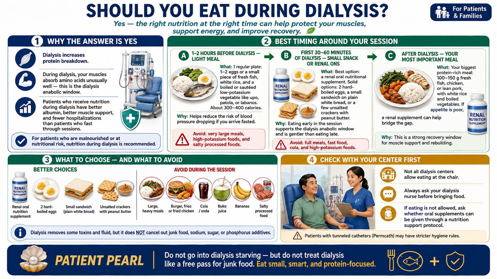
The Junk Food Myth: "Dialysis Will Clean It Out"Ang Mito ng Junk Food: "Aalisan ng Dialysis Ang Lahat"Ang Mito sa Junk Food: "Limpyohon sa Dialysis Ang Tanan"Ing Mito ning Junk Food: "Liniisan ning Dialysis Ing Amin"
One of the most dangerous beliefs among Filipino dialysis patients is this: "I can eat whatever I want during my session because the machine will filter it out anyway." Patients bring burgers, fried chicken, chips, and large bottles of cola to the dialysis chair — not because they are careless, but because they genuinely believe dialysis neutralizes the harm.Isa sa mga pinaka-mapanganib na paniniwala sa mga Filipino na pasyente ng dialysis ay ito: "Maaari akong kumain ng anumang gusto ko sa panahon ng aking session dahil ia-filter naman ito ng makina." Nagdadala ang mga pasyente ng mga burger, pritong manok, chips, at malalaking bote ng cola sa upuan ng dialysis — hindi dahil sila ay pabaya, kundi dahil talagang naniniwala sila na nagpapaneutral ang dialysis ng pinsala.Usa sa mga pinaka-delikado nga mga pagtuo sa mga Filipino nga pasyente sa dialysis mao kini: "Makakaon ko bisan unsa atol sa akong sesyon tungod kay i-filter man to sa makina." Nagdala ang mga pasyente og mga burger, piniryong manok, chips, ug dagkong bote sa cola sa lingkuranan sa dialysis — dili tungod pabaya sila, kondili tungod tinuod sila nagtuo nga ang dialysis nagpakunhod sa kadaot.Metung sa mga pinaka-mapanganib na paniniwala sa mga Filipino na pasyente ning dialysis ay iti: "Maaari akung kumain ning anumang gusto ko keng oras ning aking sesyon dahil ia-filter naman ito ning makina." Nagdadala ing mga pasyente ning mga burger, pritong manuk, chips, at malalaking bote ning cola sa upuan ning dialysis — ali dahil sila ay pabaya, kundi dahil talagang naniniwala sila a nagpapaneutral ing dialysis ning pinsala.
It does not.Hindi ito totoo.Dili kini tinuod.Ali ya totoo. Here is exactly what happens instead.Narito ang eksaktong nangyayari sa halip.Ania ang eksakto nga mahitabo sa baylo.Iti ya ing eksakto a mangyayari kabilas.
What Dialysis Actually Removes — and What It CannotAno Talaga ang Inaalis ng Dialysis — at Ano ang Hindi Nito Kayang AlisinUnsa Gayud ang Gikuha sa Dialysis — ug Unsa ang Dili Niya MakayaNanu Talaga ing Inalis ning Dialysis — at Nanu ing Ali Niya Kaya
Dialysis removes:Inaaalis ng dialysis:Gikuha sa dialysis:Inalis ning dialysis: urea, creatinine, potassium, some phosphate (about 800–1,000 mg per session over 4 hours), excess fluid, and water-soluble uremic toxins.urea, creatinine, potassium, ilang phosphate (mga 800–1,000 mg bawat session sa loob ng 4 na oras), labis na likido, at mga water-soluble na uremic toxins.urea, creatinine, potassium, pipila ka phosphate (mga 800–1,000 mg bawat sesyon sulod sa 4 ka oras), sobrang likido, ug mga water-soluble nga uremic toxins.urea, creatinine, potassium, ilang phosphate (mga 800–1,000 mg bawat sesyon sa loob ning 4 oras), labis na likido, at mga water-soluble na uremic toxins.
Dialysis does NOT remove:HINDI inaalis ng dialysis:DILI gikuha sa dialysis:ALI inalis ning dialysis: calories, fat, sugar, sodium, inorganic phosphate additives (which absorb into your blood within 30 minutes — far faster than the machine can clear phosphate), or inflammatory molecules from processed food. Eating junk food during dialysis does not cancel out the harm — it adds it on top of an already-stressed system.calories, taba, asukal, sodium, inorganic phosphate additives (na nasisipsip sa iyong dugo sa loob ng 30 minuto — mas mabilis kaysa sa kayang alisin ng makina ang phosphate), o mga nakapagpapaalab na molekyula mula sa naprosesong pagkain. Ang pagkain ng junk food sa panahon ng dialysis ay hindi nagkakansela ng pinsala — pinapalala pa nito ang sistemang na stres na.calories, taba, asukal, sodium, inorganic phosphate additives (nga nasisipsip sa imong dugo sulod sa 30 minuto — mas paspas kaysa sa makaya sa makina ang pagkuha sa phosphate), o mga inflammatory nga molekyula gikan sa naproseso nga pagkaon. Ang pagkaon og junk food atol sa dialysis wala nagkansela sa kadaot — nagdugang pa kini ibabaw sa usa ka sistema nga naa nang sa stres.calories, taba, asukal, sodium, inorganic phosphate additives (na nasisipsip sa iyong dugo sa loob ning 30 minuto — mas mabilis kaysa sa kayang alisin ning makina ing phosphate), o mga nakapagpapaalab na molekyula mula king naprosesong pamangan. Ing pagkain ning junk food keng oras ning dialysis ay ali nagkakansela ning pinsala — pinapalala pa nito ing sistemang na-stres na.
What Actually Happens When You Eat Junk Food During DialysisAno Talaga ang Nangyayari Kapag Kumain Ka ng Junk Food Sa Panahon ng DialysisUnsa Gayud ang Mahitabo sa Imong Pagkaon og Junk Food Atol sa DialysisNanu Talaga ing Mangyayari Kapag Kumain Ka ning Junk Food Keng Oras ning Dialysis
Phosphate Floods Your Blood — Faster Than the Machine Can Remove ItBinabaha ng Phosphate ang Iyong Dugo — Mas Mabilis Kaysa sa MakinaNabaha ang Imong Dugo og Phosphate — Mas Paspas Kaysa sa MakinaBinabasa ning Phosphate ing Iyong Dugo — Mas Mabilis Kaysa king Makina
Cola and dark sodas contain phosphoric acid. Processed foods — fast food chicken, chips, instant noodle flavoring, hotdog, tocino — contain sodium phosphate and other inorganic phosphate additives. Inorganic phosphate is absorbed 90–100% within 30 minutes of eating. Standard dialysis removes approximately 800–1,000 mg of phosphate over a full 4-hour session. One bottle of cola can deliver 300–500 mg of phosphoric acid into your blood before the machine has had a chance to clear much of anything. Your phosphate level spikes even while you are connected to the machine.Ang cola at madilim na mga soda ay naglalaman ng phosphoric acid. Ang mga naprosesong pagkain — fast food chicken, chips, flavoring ng instant noodle, hotdog, tocino — ay naglalaman ng sodium phosphate at iba pang inorganic phosphate additives. Ang inorganic phosphate ay nasisipsip ng 90–100% sa loob ng 30 minuto pagkatapos kumain. Ang standard na dialysis ay nag-aalis ng humigit-kumulang 800–1,000 mg ng phosphate sa isang buong 4-oras na session. Ang isang bote ng cola ay maaaring maghatid ng 300–500 mg ng phosphoric acid sa iyong dugo bago pa makapag-alis ang makina ng kahit ano. Ang iyong antas ng phosphate ay tumaas kahit nakakonekta ka sa makina.Ang cola ug madilim nga mga soda adunay phosphoric acid. Ang mga naproseso nga pagkaon — fast food chicken, chips, flavoring sa instant noodle, hotdog, tocino — adunay sodium phosphate ug ubang inorganic phosphate additives. Ang inorganic phosphate nasisipsip og 90–100% sulod sa 30 minuto pagkakaon. Ang standard na dialysis nagkuha og mga 800–1,000 mg sa phosphate sa tibuok 4-oras nga sesyon. Ang usa ka bote sa cola makahimo og paghatag og 300–500 mg sa phosphoric acid sa imong dugo ayha nakalagay ang makina og bisan unsa. Ang imong lebel sa phosphate moasdang bisan konektado ka sa makina.Ing cola at maitim na mga soda ay naglalaman ning phosphoric acid. Ing mga naprosesong pamangan — fast food chicken, chips, flavoring ning instant noodle, hotdog, tocino — ay naglalaman ning sodium phosphate at iba pang inorganic phosphate additives. Ing inorganic phosphate ay nasisipsip ning 90–100% sa loob ning 30 minuto pagkatapos kumain. Ing standard na dialysis ay nag-aalis ning mga 800–1,000 mg ning phosphate sa isang buung 4-oras na sesyon. Isang bote ning cola ay maaaring maghatid ning 300–500 mg ning phosphoric acid sa iyong dugo bago pa makapag-alis ing makina ning kahit ano. Ing iyong antas ning phosphate ay tumaas kahit nakakonekta ka sa makina.
Large Meals Crash Your Blood PressureAng Malalaking Pagkain ay Nagpabagsak ng Iyong Presyon ng DugoAng Dakong mga Pagkaon Nagpahulog sa Imong Presyon sa DugoIng Malalaking Pamangan ay Nagpabagsak ning Iyong Presyon ning Dugo
When you eat a large meal, your body sends blood rushing to your gut to aid digestion — this is called postprandial splanchnic vasodilation. Under normal circumstances this is harmless. During dialysis, the machine is simultaneously pulling fluid from your bloodstream (ultrafiltration). Blood pooling in your gut plus fluid being removed by the machine = a dangerous drop in the blood available to your heart and brain. The result is intradialytic hypotension — the sudden drop in blood pressure that causes dizziness, cramping, nausea, vomiting, or fainting during your session. Patients who eat large fast food meals at the dialysis chair have significantly more of these episodes.Kapag kumain ka ng malaking pagkain, nagpapadala ang iyong katawan ng dugo sa iyong tiyan upang makatulong sa pagtunaw — ito ay tinatawag na postprandial splanchnic vasodilation. Sa normal na sitwasyon ay hindi ito mapanganib. Sa panahon ng dialysis, ang makina ay sabay na humihila ng likido mula sa iyong daloy ng dugo (ultrafiltration). Ang pagtitipon ng dugo sa iyong tiyan kasabay ng pagtanggal ng likido ng makina = isang mapanganib na pagbagsak ng dugo na available sa iyong puso at utak. Ang resulta ay intradialytic hypotension — ang biglang pagbagsak ng presyon ng dugo na nagdudulot ng pagkahilo, pamimigat ng kalamnan, pagduduwal, pagsusuka, o pagkahimatay sa panahon ng iyong session. Ang mga pasyenteng kumakain ng malalaking fast food meals sa upuan ng dialysis ay may mas marami sa mga episodyong ito.Sa diha nga mokaon ka og dakong pagkaon, ang imong lawas nagpadala og dugo ngadto sa imong tiyan aron makatabang sa pagtunaw — gitawag kini og postprandial splanchnic vasodilation. Sa normal nga kahimtang kini walay kadaot. Atol sa dialysis, ang makina sabay nagkuha sa likido gikan sa imong daloy sa dugo (ultrafiltration). Ang pagtipon sa dugo sa imong tiyan dugang ang pagkuha sa likido sa makina = usa ka delikado nga paghulog sa dugo nga anaa sa imong puso ug utok. Ang resulta mao ang intradialytic hypotension — ang kalit nga paghulog sa presyon sa dugo nga nagpahinabo og pagkalipong, krog, pagdulaw, pagsuka, o pagkaluya atol sa imong sesyon. Ang mga pasyente nga mokaon og dakong fast food meals sa lingkuranan sa dialysis adunay mas daghan niini nga mga episode.Kapag kumain ka ning malaking pamangan, nagpapadala ing iyong katawan ning dugo sa iyong tiyan para makatulong sa pagtunaw — iti ay tinatawag na postprandial splanchnic vasodilation. Sa normal na sitwasyon ay ali ito mapanganib. Keng oras ning dialysis, ing makina ay sabay na humihila ning likido mula sa iyong daloy ning dugo (ultrafiltration). Ing pagtitipon ning dugo sa iyong tiyan kasabay ning pagtanggal ning likido ning makina = isang mapanganib na pagbagsak ning dugo a available sa iyong puso at utak. Ing resulta ay intradialytic hypotension — ing biglang pagbagsak ning presyon ning dugo a nagdudulot ning pagkahilo, pamimigat ning kalamnan, pagduduwal, pagsusuka, o pagkahimatay keng oras ning iyong sesyon. Ing mga pasyenteng kumakain ning malalaking fast food meals sa upuan ning dialysis ay may mas marami sa mga episodyong iti.
Processed Food Amplifies the Inflammation Already Caused by DialysisAng Naprosesong Pagkain ay Nagpapalala ng Pamamaga na Dulot ng DialysisAng Naproseso nga Pagkaon Nagpadako sa Pamamaga nga Gipahinabo sa DialysisIng Naprosesong Pamangan ay Nagpapalala ning Pamamaga a Dulot ning Dialysis
Dialysis itself causes inflammation — every session triggers a stress response that elevates markers like CRP and IL-6. This chronic inflammation is one of the main reasons dialysis patients have a much higher risk of heart disease. Processed and fast food is loaded with compounds called advanced glycation end products (AGEs), trans fats, and chemical additives that activate the same inflammatory pathways. Eating junk food during dialysis does not replace the bad effects — it adds to them, amplifying the very inflammation that damages your heart and blood vessels over time.Ang dialysis mismo ay nagdudulot ng pamamaga — bawat session ay nagpapagana ng stress response na nagpapataas ng mga marker tulad ng CRP at IL-6. Ang kronikong pamamaga na ito ay isa sa mga pangunahing dahilan kung bakit ang mga pasyente ng dialysis ay may mas mataas na panganib ng sakit sa puso. Ang naproseso at fast food ay puno ng mga compound na tinatawag na advanced glycation end products (AGEs), trans fats, at mga chemical additive na nagpapagana ng parehong mga landas ng pamamaga. Ang pagkain ng junk food sa panahon ng dialysis ay hindi pinapalitan ang mga masamang epekto — ito ay nagdadagdag sa kanila, nagpapalaki ng pamamaga mismo na nagpapasama ng iyong puso at mga daluyan ng dugo sa paglipas ng panahon.Ang dialysis mismo nagpahinabo sa pamamaga — matag sesyon nagpagana og stress response nga nagpataas sa mga marker sama sa CRP ug IL-6. Kining kronikong pamamaga usa sa mga nag-unang hinungdan nganong ang mga pasyente sa dialysis adunay mas taas nga peligro sa sakit sa kasingkasing. Ang naproseso ug fast food puno sa mga compound nga gitawag og advanced glycation end products (AGEs), trans fats, ug mga chemical additive nga nagpagana sa mao nga mga daanan sa pamamaga. Ang pagkaon og junk food atol sa dialysis wala magpuli sa mga daotang epekto — nagdugang pa kini kanila, nagpabag-o sa pamamaga mismo nga nagpasama sa imong kasingkasing ug mga ugat sa dugo sa paglabay sa panahon.Ing dialysis mismo ay nagdudulot ning pamamaga — balang sesyon ay nagpapagana ning stress response a nagpapataas ning mga marker tulad ning CRP at IL-6. Ing kronikong pamamaga na iti ay metung sa mga pangunahing dahilan kung bakit ing mga pasyente ning dialysis ay may mas mataas na panganib ning sakit sa puso. Ing naproseso at fast food ay puno ning mga compound na tinatawag na advanced glycation end products (AGEs), trans fats, at mga chemical additive a nagpapagana ning parehong mga landas ning pamamaga. Ing pagkain ning junk food keng oras ning dialysis ay ali pinapalitan ing mga masamang epekto — nagdadagdag pa ito sa kanila, nagpapalaki ning pamamaga mismo a nagpapasama ning iyong puso at mga daluyan ning dugo sa paglipas ning panahon.
High Sodium Drives Thirst and Fluid Overload Before Your Next SessionAng Mataas na Sodium ay Nagdudulot ng Uhaw at Labis na Likido Bago ang Susunod na SessionAng Taas nga Sodium Nagpahinabo og Uhaw ug Sobrang Likido Ayha sa Sunod SesyonIng Mataas na Sodium ay Nagdudulot ning Uhaw at Labis na Likido Bago ing Susunod na Sesyon
Fast food is extremely high in sodium — a single burger meal can contain 1,500–2,500 mg of sodium (more than your entire recommended daily limit). Sodium makes you thirsty, and thirst drives fluid intake. That fluid sits in your body until your next session, causing fluid overload, high blood pressure, and putting strain on your heart. The machine removes it — but at a cost: the more fluid pulled in one session, the higher the risk of cramps and blood pressure crashes.Ang fast food ay napakataas sa sodium — ang isang burger meal ay maaaring maglaman ng 1,500–2,500 mg ng sodium (higit pa sa iyong buong inirerekomendang limitasyon sa isang araw). Ang sodium ay nagpapauhaw sa iyo, at ang uhaw ay nagdudulot ng pag-inom ng likido. Ang likidong iyon ay nananatili sa iyong katawan hanggang sa iyong susunod na session, na nagdudulot ng labis na likido, mataas na presyon ng dugo, at naglalagay ng strain sa iyong puso. Tinatanggal ito ng makina — ngunit may presyo: kung mas maraming likido ang hinila sa isang session, mas mataas ang panganib ng mga cramp at pagbagsak ng presyon ng dugo.Ang fast food pataas kaayo sa sodium — ang usa ka burger meal mahimong adunay 1,500–2,500 mg sa sodium (labaw pa sa imong tibuok nga girekomendar nga adlaw-adlaw nga limitasyon). Ang sodium nagpauhaw kanimo, ug ang uhaw nagdala sa pag-inom og likido. Ang likido nagpabilin sa imong lawas hangtod sa imong sunod nga sesyon, nagpahinabo sa labis nga likido, taas nga presyon sa dugo, ug nagbutang og stress sa imong kasingkasing. Gikuha kini sa makina — apan adunay presyo: mas daghan ang likido nga nakuha sa usa ka sesyon, mas taas ang peligro sa mga krog ug paghulog sa presyon sa dugo.Ing fast food ay napakataas king sodium — isang burger meal ay maaaring maglaman ning 1,500–2,500 mg ning sodium (higit pa sa iyong buung inirerekomendang limitasyon sa isang araw). Ing sodium ay nagpapauhaw sa iyo, at ing uhaw ay nagdudulot ning pag-inum ning likido. Ing likidong iyan ay nananatili sa iyong katawan hanggang sa iyong susunod na sesyon, na nagdudulot ning labis na likido, mataas na presyon ning dugo, at naglalagay ning strain sa iyong puso. Tinatanggal ito ning makina — ngunit may presyo: kung mas maraming likido ing nahila sa isang sesyon, mas mataas ing panganib ning mga cramp at pagbagsak ning presyon ning dugo.
Common Foods Patients Bring — and the RealityMga Pagkaing Dala ng mga Pasyente — at ang KatotohananMga Pagkaon nga Gidala sa mga Pasyente — ug ang KamatuoranMga Pamanganing Dala ning mga Pasyente — at ing Katotohanan
| What Patients BringAno ang Dala ng mga PasyenteUnsa ang Gidala sa mga PasyenteNanu ing Dala ning mga Pasyente | What It ContainsAno ang Nilalaman NitoUnsa ang Sulod NiiniNanu ing Nilalaman Nito | What Actually HappensAno Talaga ang NangyayariUnsa Gayud ang MahitaboNanu Talaga ing Mangyayari |
|---|---|---|
| 1 burger + fries (e.g., Jollibee Yumburger meal) | ~600–800 mg inorganic phosphate; 1,500–2,000 mg sodium; 40–50 g fat; 800+ kcal | Phosphate spikes in blood faster than dialysis removes it; large fat load → blood pooling in gut → IDH risk; sodium → thirst → interdialytic weight gainTumaas ang phosphate sa dugo nang mas mabilis kaysa inaalis ng dialysis; malaking fat load → pagtitipon ng dugo sa tiyan → panganib ng IDH; sodium → uhaw → pagtaas ng timbang sa pagitan ng mga sessionMoasdang ang phosphate sa dugo mas paspas kaysa gikuha sa dialysis; dakong fat load → pagtipon sa dugo sa tiyan → peligro sa IDH; sodium → uhaw → pagtaas sa timbang tali sa mga sesyonTumaas ing phosphate sa dugo nang mas mabilis kaysa inaalis ning dialysis; malaking fat load → pagtitipon ning dugo sa tiyan → panganib ning IDH; sodium → uhaw → pagtaas ning timbang sa pagitan ning mga sesyon |
| 1.5L bottle of cola (Coke, Pepsi) | Phosphoric acid (~300–500 mg); ~150 g sugar; virtually no nutrition | Instant phosphate absorption within 30 minutes; massive sugar load; zero protein or useful nutrition; does not replace water or fluid budgetAgad na pagsipsip ng phosphate sa loob ng 30 minuto; malaking sugar load; walang protina o kapaki-pakinabang na nutrisyon; hindi pumapalit sa tubig o badyet ng likidoDiha-diha nga pagsipsip sa phosphate sulod sa 30 minuto; dakong sugar load; wala protina o kapuslan nga nutrisyon; wala magpuli sa tubig o badyet sa likidoAgad na pagsipsip ning phosphate sa loob ning 30 minuto; malaking sugar load; walang protina o kapaki-pakinabang na nutrisyon; ali pumapalit sa tubig o badyet ning likido |
| Chips / Pringles (1 tube) | ~600–800 mg sodium; phosphate additives; ~500 kcal empty calories | Sodium → thirst → fluid overload; inorganic phosphate additives → hyperphosphatemiaSodium → uhaw → labis na likido; inorganic phosphate additives → hyperphosphatemiaSodium → uhaw → sobrang likido; inorganic phosphate additives → hyperphosphatemiaSodium → uhaw → labis na likido; inorganic phosphate additives → hyperphosphatemia |
| Instant noodles (1 pack) | ~1,500–2,000 mg sodium in seasoning; phosphate in flavor powder; high fat | One of the worst foods for dialysis patients at any time; the flavoring powder is the most dangerous part; "no-soup" version still delivers phosphate from the noodles themselvesIsa sa pinakamasamang pagkain para sa mga pasyente ng dialysis sa anumang oras; ang flavoring powder ang pinaka-mapanganib na bahagi; ang bersyon na "walang sabaw" ay nagbibigay pa rin ng phosphate mula sa mga noodles mismoUsa sa pinakagrabe nga pagkaon alang sa mga pasyente sa dialysis bisan unsang oras; ang flavoring powder ang pinaka-delikadong bahin; ang bersyon nga "walay sabaw" naghatag pa gihapon og phosphate gikan sa mga noodles mismoMetung sa pinakamasamang pamangan para king mga pasyente ning dialysis sa anumang oras; ing flavoring powder ing pinaka-mapanganib na bahagi; ing bersyon na "walang sabaw" ay nagbibigay pa rin ning phosphate mula sa mga noodles mismo |
| Hotdog or processed meat | Sodium phosphate additives; ~800–1,200 mg sodium; curing chemicals | Inorganic phosphate at 90–100% absorption; high sodium; inflammatory preservativesInorganic phosphate sa 90–100% na pagsipsip; mataas na sodium; mga nakapagpapaalab na preservativesInorganic phosphate sa 90–100% nga pagsipsip; taas nga sodium; mga inflammatory nga preservativesInorganic phosphate sa 90–100% na pagsipsip; mataas na sodium; mga nakapagpapaalab na preservatives |
What to Bring InsteadAno ang Dapat Dalhin sa HalipUnsa ang Magdalon sa BayloNanu ing Dapat Dalhin Kabilas
A renal ONS (Nepro HP bottle, Kidneypro HP sachets) + 2 hard-boiled eggs; or a plain white bread sandwich with fresh boiled chicken and no sauce; or unsalted crackers with peanut butter. These provide real protein and calories without the phosphate bombs, sodium load, or inflammatory additives of fast food — and they will not crash your blood pressure during ultrafiltration.Isang renal ONS (Nepro HP bote, Kidneypro HP sachets) + 2 hard-boiled na itlog; o isang simpleng white bread sandwich na may sariwang pinakuluang manok at walang sarsa; o mga walang-asin na crackers na may peanut butter. Nagbibigay ang mga ito ng tunay na protina at calories nang walang mga phosphate bomb, mataas na sodium, o mga nakapagpapaalab na additives ng fast food — at hindi nito babagsak ang iyong presyon ng dugo sa panahon ng ultrafiltration.Usa ka renal ONS (Nepro HP bote, Kidneypro HP sachets) + 2 hard-boiled nga itlog; o usa ka simpleng white bread sandwich uban ang sariwang giluto nga manok ug walay sarsa; o mga crackers nga walay asin uban ang peanut butter. Kini naghatag og tinuod nga protina ug calories nga wala ang mga phosphate bombs, sodium load, o mga inflammatory additives sa fast food — ug dili kini makabagsak sa imong presyon sa dugo atol sa ultrafiltration.Isang renal ONS (Nepro HP bote, Kidneypro HP sachets) + 2 hard-boiled na itlog; o isang simpleng white bread sandwich na may sariwang pinakuluang manuk at walang sarsa; o mga walang-asin na crackers na may peanut butter. Nagbibigay ini ning tunay na protina at calories nang walang mga phosphate bomb, mataas na sodium, o mga nakapagpapaalab na additives ning fast food — at ali nito babagsak ing iyong presyon ning dugo keng oras ning ultrafiltration.
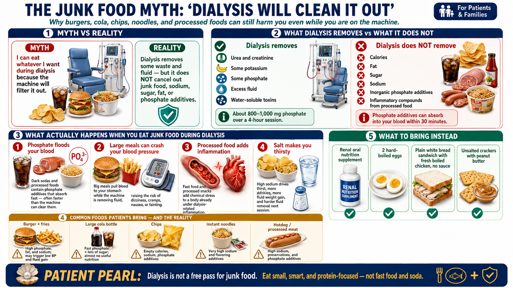
Fluids — Still Matters, Calibrated to YouMga Likido — Mahalaga Pa Rin, Iniaangkop sa IyoMga Likido — Mahinungdanon Pa, Gihikay Alang KanimoMga Likido — Mahalaga Pa Rin, Iniaangkop King Kayu
Fluid restriction on dialysis is not about a fixed rule — it is about keeping your inter-dialytic weight gain (IDWG) in a safe range. Most patients should aim to gain no more than 1 to 1.5 kilograms between dialysis sessions. Gaining too much means your heart and lungs are under pressure during the sessions, and you are more likely to have blood pressure problems.Ang paghihigpit sa likido sa dialysis ay hindi tungkol sa isang nakapirming panuntunan — ito ay tungkol sa pagpapanatili ng iyong inter-dialytic weight gain (IDWG) sa ligtas na hanay. Ang karamihan ng mga pasyente ay dapat na layunin na hindi lalampas sa 1 hanggang 1.5 kilogramo sa pagitan ng mga session ng dialysis. Ang labis na pagtaas ay nangangahulugang ang iyong puso at baga ay nasa ilalim ng presyon sa panahon ng mga session, at mas malamang na magkaroon ka ng mga problema sa presyon ng dugo.Ang pagdili sa likido sa dialysis dili bahin sa usa ka nagtutungha nga lagda — bahin kini sa pagpadayon sa imong inter-dialytic weight gain (IDWG) sa luwas nga saklaw. Ang kadaghanan sa mga pasyente kinahanglan mosundog sa dili labaw sa 1 hangtod 1.5 kilogramo tali sa mga sesyon sa dialysis. Ang pagkuha og labis nagpasabot nga ang imong kasingkasing ug baga naa sa ilalim sa presyon atol sa mga sesyon, ug mas lagmit nga adunay imong mga problema sa presyon sa dugo.Ing paghigpit sa likido sa dialysis ay ali tungkol sa isang nakapirming tuntunin — iti ay tungkol sa pagpapanatili ning iyong inter-dialytic weight gain (IDWG) sa ligtas na hanay. Ing karamihan ning mga pasyente ay dapat na layunin na ali lalampas sa 1 hanggang 1.5 kilogramo sa pagitan ning mga sesyon ning dialysis. Ing labis na pagtaas ay nangangahulugang ing iyong puso at baga ay nasa ilalim ning presyon keng oras ning mga sesyon, at mas malamang na magkaroon ka ning mga problema sa presyon ning dugo.
Calculating Your Daily Fluid AllowancePagkalkula ng Iyong Pang-araw-araw na Allowance ng LikidoPagkwenta sa Imong Adlaw-adlaw nga Allowance sa LikidoPagkalkula ning Iyong Pang-araw-araw na Allowance ning Likido
A simple starting point: your previous day's urine output + 500 mL = your daily fluid budget. If you make no urine at all, aim for approximately 500–800 mL per day. Your nephrologist may adjust this based on your IDWG trends and how you feel during sessions.Isang simpleng panimula: ang output ng ihi ng nakaraang araw + 500 mL = ang iyong pang-araw-araw na badyet ng likido. Kung hindi ka gumagawa ng ihi, layunin ang humigit-kumulang 500–800 mL bawat araw. Ang iyong nephrologist ay maaaring i-adjust ito batay sa iyong mga uso sa IDWG at kung paano ka nakakaramdam sa panahon ng mga session.Usa ka simple nga pagsugod: ang output sa ihi sa miaging adlaw + 500 mL = ang imong adlaw-adlaw nga badyet sa likido. Kung wala kang ihi, layunin ang mga 500–800 mL bawat adlaw. Ang imong nephrologist mahimong i-adjust kini base sa imong mga uso sa IDWG ug kung unsa ang imong gibati atol sa mga sesyon.Isang simpleng panimula: ing output ning ihi ning nakaraang araw + 500 mL = ing iyong pang-araw-araw na badyet ning likido. Kung ali ka gumagawa ning ihi, layunin ing mga 500–800 mL bawat araw. Ing iyong nephrologist ay maaaring i-adjust ito base king iyong mga uso sa IDWG at kung paano ka nakakaramdam keng oras ning mga sesyon.
High Weight Gain Between Sessions = DangerMataas na Pagtaas ng Timbang sa Pagitan ng mga Session = PanganibTaas nga Pagtaas sa Timbang Tali sa mga Sesyon = PeligroMataas na Pagtaas ning Timbang sa Pagitan ning mga Sesyon = Panganib
Consistently gaining more than 2 kg between sessions puts strain on your heart and lungs and makes sessions more difficult. The best way to control this is to reduce your salt intake — salt drives thirst, and thirst drives fluid intake. Cutting salt is more effective than willpower alone.Ang palaging pagtaas ng higit sa 2 kg sa pagitan ng mga session ay naglalagay ng strain sa iyong puso at baga at nagpapahirap ng mga session. Ang pinakamabisang paraan upang kontrolin ito ay ang pagbabawas ng iyong pagtanggap ng asin — ang asin ay nagpapauhaw, at ang uhaw ay nagpapalaki ng pag-inom ng likido. Ang pagbabawas ng asin ay mas epektibo kaysa sa lakas ng loob lamang.Ang kanunay nga pagtaas og labaw sa 2 kg tali sa mga sesyon nagbutang og strain sa imong kasingkasing ug baga ug nagpahimo og mas lisod sa mga sesyon. Ang pinakamaayong paagi sa pagkontrol niini mao ang pagpakunhod sa imong pagtanggap sa asin — ang asin nagpauhaw, ug ang uhaw nagpadako sa pag-inom og likido. Ang pagputol sa asin mas epektibo kaysa sa kusog sa buot lamang.Ing palaging pagtaas ning higit sa 2 kg sa pagitan ning mga sesyon ay naglalagay ning strain sa iyong puso at baga at nagpapahirap ning mga sesyon. Ing pinakamabisang paraan para kontrolin iti ay ing pagbabawas ning iyong pagtanggap ning asin — ing asin ay nagpapauhaw, at ing uhaw ay nagpapalaki ning pag-inum ning likido. Ing pagbabawas ning asin ay mas epektibo kaysa sa lakas ning loob lamang.
| DrinkInuminIlimnonInumin | Counts as Fluid?Binibilang bilang Likido?Gibilang Isip Likido?Binibilang bilang Likido? | PotassiumPotassiumPotassiumPotassium | NotesMga TalaMga SulatMga Tala |
|---|---|---|---|
| WaterTubigTubigTubig | YesOoOoWa | NoneWalaWalaWala | Best choice; use a smaller cup to limit intakePinakamainam na pagpipilian; gumamit ng mas maliit na tasa upang limitahan ang pagtanggapPinakamaayong pagpili; gamiton ang mas gagmayng tasa aron limitahan ang pagtanggapPinakamayap na pagpipilian; gumamit ning mas maliit na tasa para limitahan ing pagtanggap |
| Diluted juice (small serving)Diluted juice (maliit na serving)Diluted juice (gagmayng serving)Diluted juice (maliit na serving) | YesOoOoWa | Low–ModerateMababa–KatamtamanUbos–KatamtamanMababa–Katamtaman | Occasional; no concentrated or canned juicePaminsan-minsan; walang concentrated o de-latang juiceSa usahay; walay concentrated o de-latang juicePaminsan-minsan; walang concentrated o de-latang juice |
| Buko juice (coconut water) | YesOoOoWa | Very HighNapakataasPataas KaayoNapakataas | Avoid if making little or no urineIwasan kung kaunti o walang ihiLikayi kung gamay o walay ihiLikasin nung kaunti o walang ihi |
| Regular soda / colaRegular na soda / colaRegular nga soda / colaRegular na soda / cola | YesOoOoWa | LowMababaUbosMababa | Contains phosphoric acid — avoid regardless of fluid concernsNaglalaman ng phosphoric acid — iwasan anuman ang mga alalahanin sa likidoAdunay phosphoric acid — likayi bisan unsang mga kabalaka sa likidoNaglalaman ning phosphoric acid — likasin anuman ing mga alalahanin sa likido |
| Energy drinksEnergy drinksEnergy drinksEnergy drinks | YesOoOoWa | Moderate–HighKatamtaman–MataasKatamtaman–TaasKatamtaman–Mataas | Avoid — high in additives, high in potassium, caffeinatedIwasan — mataas sa mga additives, mataas sa potassium, may caffeineLikayi — taas sa mga additives, taas sa potassium, adunay caffeineLikasin — mataas king mga additives, mataas king potassium, may caffeine |
Managing Thirst Without Drinking MorePamamahala ng Uhaw Nang Hindi Umiinom nang Mas MaramiPagdumala sa Uhaw Nga Wala Mag-inom og Labaw PaPangasiwa ning Uhaw Nang Ali Umiinum nang Mas Damo
Reduce salt at every meal — this is the single most effective way to reduce thirst. Chewing small pieces of ice gives your mouth the sensation of drinking more than it actually adds to your fluid intake. Keeping your mouth moist with a small rinse (spit it out) also helps. Sucking on a slice of lemon or chewing gum can reduce thirst without adding fluid.Bawasan ang asin sa bawat pagkain — ito ang pinaka-epektibong paraan upang mabawasan ang uhaw. Ang pagngata ng maliliit na piraso ng yelo ay nagbibigay sa iyong bibig ng damdamin ng pag-inom ng mas marami kaysa sa aktwal na idinaragdag nito sa iyong pagtanggap ng likido. Ang pagpapanatiling basa ng iyong bibig sa maliit na banlawan (idura ito) ay nakakatulong din. Ang pagsipsip ng isang hiwa ng limon o pagngata ng gum ay maaaring mabawasan ang uhaw nang hindi nagdaragdag ng likido.Pagkunhoa ang asin sa matag pagkaon — mao kini ang labing epektibong paagi aron makunhod ang uhaw. Ang pagpanggas og gagmayng piraso sa yelo naghatag sa imong baba sa pagbati sa pag-inom og labaw pa kaysa sa aktwal nga gidugang niini sa imong pagtanggap sa likido. Ang pagpadayon sa pagbasa sa imong baba sa gamayng limpyo (lunsa kini) nakaabante usab. Ang pagsipsip sa usa ka hiwa sa limon o pagpanggas og gum mahimong makunhoran ang uhaw nga wala magdugang og likido.Bawasan ing asin sa balang pamangan — iti ya ing pinaka-epektibong paraan para mabawasan ing uhaw. Ing pagngata ning maliliit na piraso ning yelo ay nagbibigay sa iyong bibig ning damdamin ning pag-inum ning mas marami kaysa sa aktwal na idinaragdag nito sa iyong pagtanggap ning likido. Ing pagpapanatiling basa ning iyong bibig sa maliit na banlawan (idura ito) ay nakakatulong ding. Ing pagsipsip ning isang hiwa ning limon o pagngata ning gum ay maaaring mabawasan ing uhaw nang ali nagdaragdag ning likido.
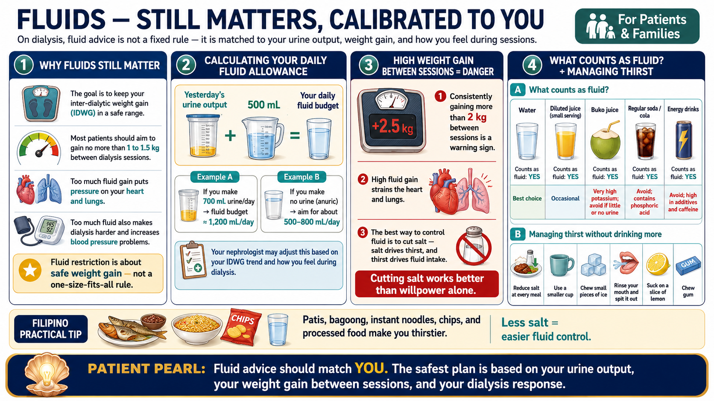
The Filipino Kitchen on DialysisAng Kusina ng Pilipino sa DialysisAng Kusina sa Pilipino sa DialysisIng Kusina ning Pilipino king Dialysis
Filipino food is rice-based, flavorful, and built around community. Dialysis does not mean giving up your food culture — it means understanding which foods work for you and which ones need to be limited or prepared differently. This table summarizes the most common Filipino foods for dialysis patients.Ang pagkaing Pilipino ay batay sa kanin, masarap, at itinayo sa paligid ng komunidad. Ang dialysis ay hindi nangangahulugang pagpapabaya ng iyong kultura sa pagkain — nangangahulugan ito ng pag-unawa kung aling mga pagkain ang gumagana para sa iyo at kung alin ang kailangang limitahan o ihanda nang naiiba. Ang talahanayan na ito ay nagbubuod ng mga pinaka-karaniwang pagkaing Pilipino para sa mga pasyente ng dialysis.Ang pagkaon sa Pilipino base sa kan-on, masabor, ug gitukod sa paligid sa komunidad. Ang dialysis dili nagpasabot sa pagbiya sa imong kultura sa pagkaon — nagpasabot kini sa pagsabut kung unsang mga pagkaon ang nagtrabaho alang kanimo ug kung unsay kinahanglan limitahan o giandam sa lain-laing paagi. Kini nga lamesa nagpagamay sa pinaka-kasagaran nga mga pagkaon sa Pilipino alang sa mga pasyente sa dialysis.Ing pagkain ning Pilipino ay base king kan-in, masarap, at itinayo sa paligid ning komunidad. Ing dialysis ay ali nangangahulugang pagpapabaya ning iyong kultura sa pamangan — nangangahulugan ito ning pag-intindi kung aning mga pamangan ing gumagana para sa iyo at kung alin ing kailangang limitahan o ihanda nang naiiba. Ing talahanayan na iti ay nagbubuod ning mga pinaka-karaniwang pamanganing Pilipino para king mga pasyente ning dialysis.
| FoodPagkainPagkaonPamangan | Safety on DialysisKaligtasan sa DialysisKaluwasan sa DialysisKaligtasan king Dialysis | NotesMga TalaMga SulatMga Tala |
|---|---|---|
| White rice (cooked) | ✅ SafeLigtasLuwasLigtas | Low potassium; lower phosphorus than brown rice; eat normal portionsMababang potassium; mas mababang phosphorus kaysa sa brown rice; kumain ng normal na bahagiUbos nga potassium; mas ubos nga phosphorus kaysa sa brown rice; kan-a ang normal nga bahinMabang potassium; mas mabang phosphorus kaysa king brown rice; kumain ning normal na bahagi |
| Lugaw / plain arroz caldo | ✅ SafeLigtasLuwasLigtas | Plain rice porridge is fine; skip the patis; go easy on ginger if eating large amountsAng simpleng lugaw ay ayos; laktawan ang patis; mag-ingat sa luya kung kumakain ng malaking damiAng simpleng lugaw maayo; priso ang patis; pag-amping sa luya kung mokaon og daghang kantidadIng simpleng lugaw ay ayus; laktawan ing patis; mag-ingat sa luya nung kumakain ning malaking dami |
| Fresh tilapia / bangus | ✅ SafeLigtasLuwasLigtas | Excellent affordable protein; choose fresh or frozen, not dried or saltedNapakagandang abot-kayang protina; pumili ng sariwa o frozen, hindi tuyo o inasnanMaayo kaayo nga baratong protina; pilia ang sariwa o frozen, dili tuyo o inasnanNapakagandang abot-kayang protina; pumili ning sariwa o frozen, ali tuyo o inasnan |
| EggsItlogItlogItlog | ✅ SafeLigtasLuwasLigtas | Best daily protein source; take binder if eating 2 or more with a full mealPinakamainam na pang-araw-araw na pinagkukunan ng protina; uminom ng binder kung kumakain ng 2 o higit pa kasabay ng buong pagkainPinakamaayong adlaw-adlaw nga tinubdan sa protina; kumuha og binder kung mokaon og 2 o labaw pa uban ang tibuok pagkaonPinakamayap na pang-araw-araw na pinagkukunan ning protina; uminum ning binder nung kumakain ning 2 o higit pa kasabay ning buung pamangan |
| Fresh tofuSariwang tofuSariwang tofuSariwang tofu | ✅ SafeLigtasLuwasLigtas | Good plant protein; moderate phosphorus that absorbs less than animal sourcesMagandang protina mula sa halaman; katamtamang phosphorus na nasisipsip nang mas kaunti kaysa sa mga pinagkukunan ng hayopMaayo nga protina gikan sa tanum; katamtamang phosphorus nga nasisipsip og diyutay kaysa sa mga tinubdan gikan sa hayopMayap na protina mula king halaman; katamtamang phosphorus a nasisipsip nang mas kaunti kaysa king mga pinagkukunan ning hayop |
| Upo, patola, labanos | ✅ SafeLigtasLuwasLigtas | Low potassium; versatile cooking ingredientMababang potassium; maraming gamit na sangkap sa paglulutoUbos nga potassium; versatile nga sangkap sa paglutoMabang potassium; maraming gamit na sangkap sa pagluto |
| Kangkong (water spinach) | ⚠️ Boil firstPakuluanin munaLutoha unaPakuluan muna | Moderate potassium; boil and discard cooking water to reduce by ~40%Katamtamang potassium; pakuluanin at itapon ang tubig ng pagluluto upang mabawasan ng ~40%Katamtamang potassium; lutoha ug ibubo ang tubig sa pagluto aron makunhoran og ~40%Katamtamang potassium; pakuluan at itapon ing tubig ning pagluto para mabawasan ning ~40% |
| Malunggay | ⚠️ LimitLimitahanLimitahanLimitahan | High potassium; small amounts of boiled leaves are generally acceptable if K is controlledMataas na potassium; ang maliliit na dami ng pinakuluang dahon ay karaniwang katanggap-tanggap kung ang K ay kontroladoTaas nga potassium; gagmayng kantidad sa giluto nga dahon sa kasagaran mapayag kung ang K kontroladoMataas na potassium; maliit na dami ning pinakuluang dahon ay karaniwang katanggap-tanggap nung ing K ay kontrolado |
| Kamote (sweet potato) | ⚠️ LimitLimitahanLimitahanLimitahan | High potassium; boil and discard water; small portions onlyMataas na potassium; pakuluanin at itapon ang tubig; maliit na bahagi lamangTaas nga potassium; lutoha ug ibubo ang tubig; gagmayng bahin lamangMataas na potassium; pakuluan at itapon ing tubig; maliit na bahagi lamang |
| Saba banana | ⚠️ LimitLimitahanLimitahanLimitahan | High potassium; not daily; one small piece occasionally if K is stableMataas na potassium; hindi araw-araw; isang maliit na piraso paminsan-minsan kung stable ang KTaas nga potassium; dili adlaw-adlaw; usa ka gamayng piraso sa usahay kung stable ang KMataas na potassium; ali araw-araw; metung maliit na piraso paminsan-minsan nung stable ing K |
| Tinapa / tuyo / dried fish | ⚠️ LimitLimitahanLimitahanLimitahan | Very high sodium; moderate-high phosphorus; occasional small amounts as a condiment onlyNapakataas na sodium; katamtaman-mataas na phosphorus; paminsan-minsang maliit na dami bilang condiment lamangPataas kaayo nga sodium; katamtaman-taas nga phosphorus; usahay gamayng kantidad isip condiment lamangNapakataas na sodium; katamtaman-mataas na phosphorus; paminsan-minsang maliit na dami bilang condiment lamang |
| Bagoong / patis / toyo | ⚠️ Small amounts onlyMaliit na dami lamangGagmayng kantidad lamangMaliit na dami lamang | Very high sodium (patis ≈ 1,500 mg per tablespoon); use as a small flavor accent, not a sauceNapakataas na sodium (patis ≈ 1,500 mg bawat kutsara); gamitin bilang maliit na tanda ng lasa, hindi bilang sarsaPataas kaayo nga sodium (patis ≈ 1,500 mg bawat kutsara); gamiton isip gamayng accent sa lasa, dili isip sarsaNapakataas na sodium (patis ≈ 1,500 mg bawat kutsara); gamitin bilang maliit na tanda ning lasa, ali bilang sarsa |
| Goto toppings and tripeMga toppings ng goto at tuwalyaMga toppings sa goto ug tripeMga toppings ning goto at bituka | ⚠️ ModerateKatamtamanKatamtamanKatamtaman | Higher phosphorus; a small serving is fine; skip the patis and condensed soup baseMas mataas na phosphorus; ang maliit na serving ay ayos; laktawan ang patis at condensed soup baseMas taas nga phosphorus; ang gagmayng serving maayo; priso ang patis ug condensed soup baseMas mataas na phosphorus; ing maliit na serving ay ayus; laktawan ing patis at condensed soup base |
| Hotdog / tocino / longganisa | ❌ AvoidIwasanLikayiLikasin | Inorganic phosphorus additives + very high sodium; phosphorus absorbs almost completelyInorganic phosphorus additives + napakataas na sodium; ang phosphorus ay nasisipsip halos ganapInorganic phosphorus additives + pataas kaayo nga sodium; ang phosphorus nasisipsip halos hingpitInorganic phosphorus additives + napakataas na sodium; ing phosphorus ay nasisipsip halos ganap |
| Instant noodles / Mami soup | ❌ AvoidIwasanLikayiLikasin | Phosphorus additives in seasoning packets + very high sodium; the "low sodium" versions are still problematicPhosphorus additives sa mga seasoning packet + napakataas na sodium; ang mga bersyon na "mababang sodium" ay may problema pa rinPhosphorus additives sa mga seasoning packet + pataas kaayo nga sodium; ang mga bersyon nga "ubos sa sodium" may problema pa gihaponPhosphorus additives sa mga seasoning packet + napakataas na sodium; ing mga bersyon na "mababang sodium" ay may problema pa rin |
| Buko juice | ❌ Avoid (most patients)Iwasan (karamihan ng pasyente)Likayi (kadaghanan sa mga pasyente)Likasin (karamihan ning mga pasyente) | Very high potassium; risk of fatal hyperkalemia in patients who make little or no urineNapakataas na potassium; panganib ng nakamamatay na hyperkalemia sa mga pasyenteng gumagawa ng kaunti o walang ihiPataas kaayo nga potassium; peligro sa fatal hyperkalemia sa mga pasyente nga nagahimo og gamay o walay ihiNapakataas na potassium; panganib ning nakamamatay na hyperkalemia sa mga pasyenteng gumagawa ning kaunti o walang ihi |
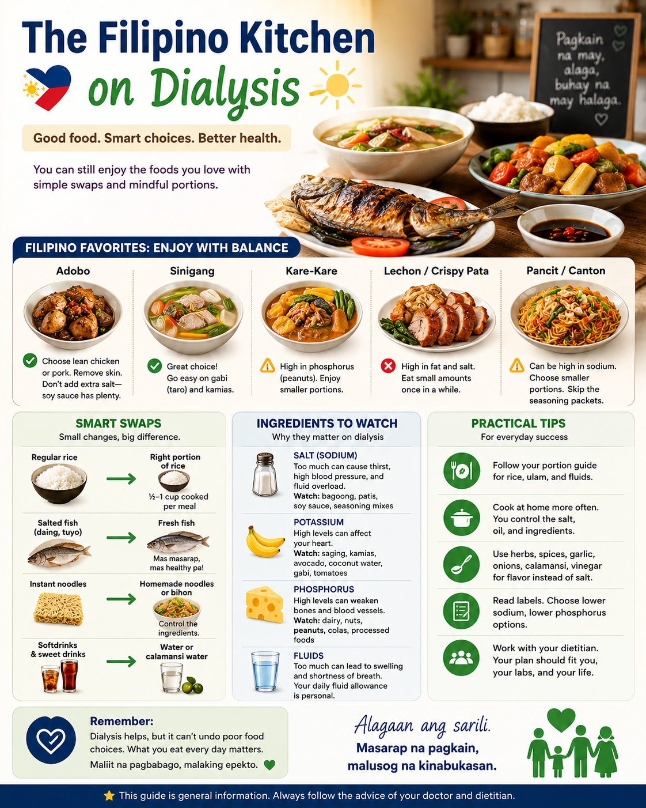
Your Questions AnsweredMga Sagot sa Iyong mga TanongMga Tubag sa Imong mga PangutanaMga Sagot King Iyong mga Tanong
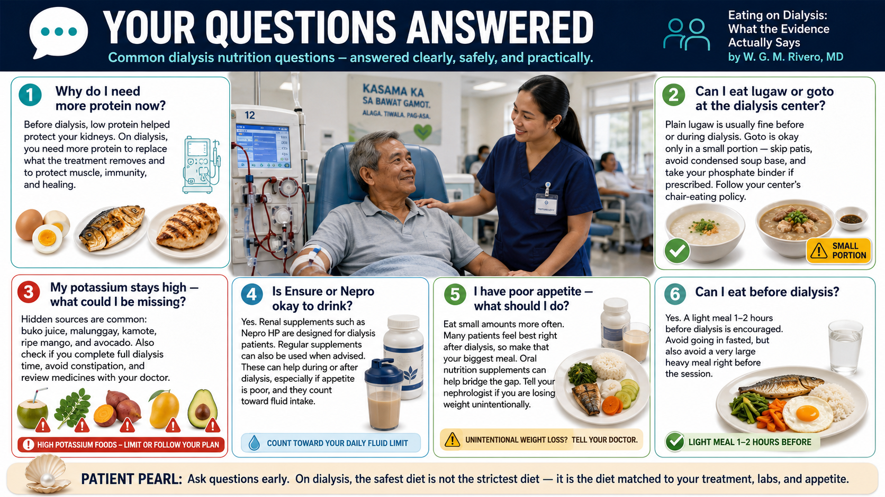
Track Your Wellbeing — Validated Patient-Reported Outcome MeasuresSubaybayan ang Iyong Kalusugan — Mga Napatunayan na Pansukat ng Kalidad ng BuhayI-monitor ang Imong Kaayohan — Mga Napatunayan nga Sukod sa Kalidad sa KinabuhiSubaybayan ing Kalusugan Mo — Deng Napatunayan a Sukat ning Kalidad ning Buhay
Symptoms like poor appetite, nausea, bad taste in the mouth, and fatigue directly affect your ability to eat well on dialysis. These three validated tools measure how dialysis-related symptoms are impacting your nutrition and quality of life — information your nephrologist and renal dietitian need to personalize your nutrition plan.Ang mga sintomas tulad ng mahinang gana sa pagkain, pagduduwal, masamang lasa sa bibig, at pagod ay direktang nakakaapekto sa iyong kakayahang kumain nang maayos sa dialysis. Ang tatlong kasangkapang ito ay sumusukat kung paano nakakaapekto ang mga sintomas sa iyong nutrisyon at kalidad ng buhay.Ang mga sintomas sama sa huyang gana sa pagkaon, paghilo, daotan nga lami sa baba, ug kakapoy direkta nga nakaapekto sa imong abilidad nga mokaon pag-ayo sa dialysis. Kini nga tulo ka mga himan nagsukat kung giunsa nakaapekto ang mga sintomas sa imong nutrisyon ug kalidad sa kinabuhi.Deng sintomas a anti pang mahinang gana sa pamangan, pagduduwal, masamang lasa king nganga, at pagod ay direkta nakakaapekto king kakayahan mong kumain nang maayos king dialysis. Deng tatlong kasangkapang iti ay sumusukat kung paanu nakakaapekto deng sintomas king iyong nutrisyon at kalidad ning buhay.
In the past 4 weeks, how bothered were you by each of the following? Rate each: 0 = Not at all bothered → 4 = Extremely bothered. Score 0–100 (higher = fewer symptoms = better).Sa nakaraang 4 na linggo, gaano kayo nagabala ang bawat sumusunod? I-rate ang bawat isa: 0 = Hindi talaga nagabala → 4 = Lubhang nagabala.Sa miaging 4 ka semana, unsa ka disturbo ang matag mosunod? I-rate ang matag usa: 0 = Wala gyud disturbo → 4 = Grabe kaayo nga disturbo.King nakaraang 4 a linggo, kapilan kayo nagabala ing bawat sumusunod? I-rate ang bawat metung: 0 = Hindi talaga nagabala → 4 = Lubhang nagabala.
—
—
KDQOL-36 Symptom/Problem subscale. Hays RD et al. Kidney Int 1994;46(3):860–866. Adapted for patient self-monitoring; not a clinical diagnostic tool.
In the past week, how bothersome was each symptom? Rate each: 0 = Not present, 1 = Barely bothersome, 2 = Somewhat, 3 = Quite a bit, 4 = Very much. Score 0–120 (lower = better).Sa nakaraang linggo, gaano kagambala ang bawat sintomas? I-rate: 0 = Wala, 1 = Bahagya, 2 = Medyo, 3 = Medyo marami, 4 = Napakarami.Sa miaging semana, unsa ka makabalda ang matag sintomas? I-rate: 0 = Wala, 1 = Gamay ra, 2 = Medyo, 3 = Daghan, 4 = Grabeng daghan.King nakaraang linggo, kapilan kagambala ing bawat sintomas? I-rate: 0 = Wala, 1 = Konti, 2 = Medyo, 3 = Medyo marami, 4 = Napakarami.
—
—
Dialysis Symptom Index. Weisbord SD et al. J Palliat Med. 2004;7(1):23–32. Adapted for patient self-monitoring; not a clinical diagnostic tool.
Over the past week, how much have the following affected you? Rate each: 0 = Not at all, 1 = Slightly, 2 = Moderately, 3 = Severely, 4 = Overwhelmingly. Score 0–48 (lower = better).Sa nakaraang linggo, gaano kalaki ang naapektuhan ka ng bawat sumusunod? I-rate: 0 = Hindi, 1 = Kaunti, 2 = Katamtaman, 3 = Malubha, 4 = Napakalubha.Sa miaging semana, unsa ka daghan ang naapekto ka sa matag mosunod? I-rate: 0 = Wala, 1 = Gamay, 2 = Katamtaman, 3 = Grabe, 4 = Grabeng-grabe.King nakaraang linggo, kapilan kalaki ing naapektuhan ka ning bawat sumusunod? I-rate: 0 = Hindi, 1 = Konti, 2 = Katamtaman, 3 = Malubha, 4 = Napakalubha.
—
—
IPOS-Renal. Murtagh FE et al. Palliative Medicine 2019;33(1):20–29. Adapted for patient self-monitoring; not a clinical diagnostic tool.
Nutrition Assessment Tools
Validated tools for identifying malnutrition risk in CKD and dialysis patients: SNAQ (quick 3-question screen), MIS (10-item scored assessment), and SGA (clinician-administered global rating).
Reference: Kruizenga HM et al. Clin Nutr 2005;24(1):75–82. SNAQ validated for hospitalized patients; adapted for CKD screening.
Reference: Kalantar-Zadeh K et al. Am J Kidney Dis 2001;38(6):1251–1263. MIS validated for maintenance hemodialysis patients. Score range 0–30.
References: Detsky AS et al. JPEN J Parenter Enteral Nutr 1987;11(1):8–13. Steiber A et al. J Ren Nutr 2004;14(1):1–7 (CKD validation).
Dialysis Nutrition: Evidence-Based Clinical Protocol
Protein-energy wasting epidemiology, guideline-concordant targets, intradialytic oral nutrition, phosphorus bioavailability, and potassium management — with Philippines-specific context.
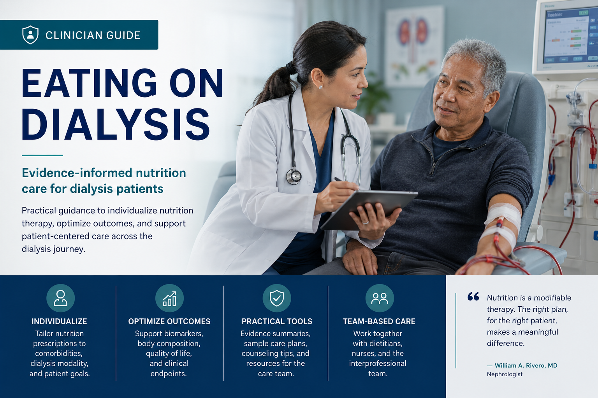
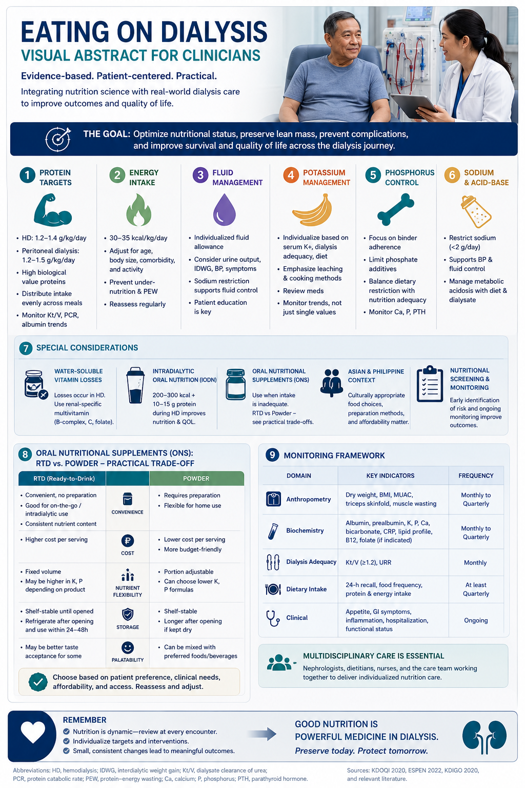
The Protein-Energy Wasting Epidemic
Protein-energy wasting (PEW) affects 28–54% of hemodialysis patients globally. Asian DOPPS data show comparable prevalence in Southeast Asian cohorts. PEW is an independent predictor of all-cause mortality, cardiovascular mortality, hospitalization, and infection risk in ESKD patients — with hazard ratios for mortality in the range of 1.8–2.5 compared to well-nourished patients.
ISRNM Diagnostic Criteria for PEW (≥3 of 4 categories required)
| Category | Criterion |
|---|---|
| Serum biochemistry | Albumin <3.8 g/dL, prealbumin <30 mg/dL (in absence of liver disease or acute inflammation), or cholesterol <100 mg/dL |
| Body mass | BMI <23 kg/m², unintentional weight loss >5% in 3 months or >10% in 6 months |
| Muscle mass | Reduced mid-arm muscle circumference (>10% below 50th percentile for age/sex), or creatinine index below normal |
| Dietary intake | Dietary protein intake <0.8 g/kg/day for ≥2 months, or dietary energy intake <25 kcal/kg/day for ≥2 months |
The Albumin Paradox
Hypoalbuminemia in dialysis patients primarily reflects inflammation and PEW — not protein excess. Restricting dietary protein in response to a low albumin level worsens the underlying deficit. Albumin <3.5 g/dL should trigger nutritional intervention, not further dietary restriction. Evaluate for concurrent infection, catheter-related bacteremia, or inflammatory flare before attributing low albumin to nutrition alone.
A critical and underappreciated driver of PEW in the Philippines is iatrogenic over-restriction: patients who started dialysis after years of CKD dietary counseling often continue their pre-dialysis protein restriction indefinitely, because no one updated their dietary advice at the time of dialysis initiation. The transition visit is the appropriate time to explicitly revise nutritional targets upward.
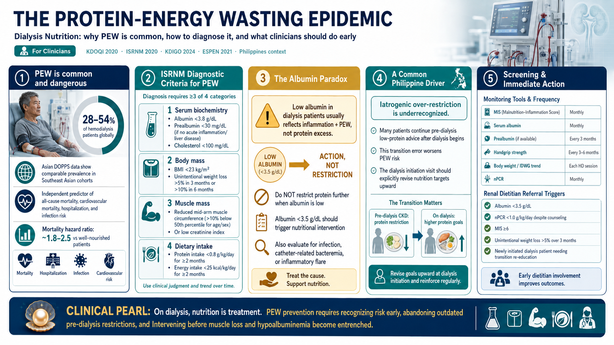
Nutritional Screening and Monitoring
| Tool / Parameter | Frequency | Threshold for Action | Notes |
|---|---|---|---|
| Malnutrition-Inflammation Score (MIS) | Monthly | ≥6 = moderate risk; ≥10 = severe | Most validated tool in HD; incorporates dialysis-specific parameters; nurse-administered in <5 minutes |
| Subjective Global Assessment (SGA) | Every 3–6 months | SGA B or C = at risk | Global standard; requires brief clinician/dietitian training; more sensitive than albumin alone |
| Serum albumin | Monthly (routine HD labs) | <3.5 g/dL = action | Reflects inflammation more than acute nutrition; trend over time > single value; half-life ~20 days |
| Prealbumin (transthyretin) | Every 3 months if available | <30 mg/dL = concern | 2-day half-life — more responsive to acute nutritional changes; better for monitoring IODN response |
| Handgrip strength (dynamometer) | Every 3–6 months | Declining trend = action | Simple, validated independent predictor of HD mortality; accessible without expensive equipment |
| Body weight and IDWG trend | Each HD session | >2 kg/month unintentional loss | Unintentional weight loss is a nutritional emergency requiring immediate workup |
| nPCR (from Kt/V labs) | Monthly | <1.0 g/kg/day | Reliable surrogate for dietary protein intake; automatically derived in most dialysis software |
Indications for Renal Dietitian Referral
- Serum albumin <3.5 g/dL
- nPCR <1.0 g/kg/day despite dietary counseling
- MIS ≥6 on routine monthly assessment
- Unintentional weight loss >5% over 3 months
- PD patient with recurrent peritonitis (protein losses spike dramatically with each episode)
- Newly initiated dialysis patient — transition nutritional re-education
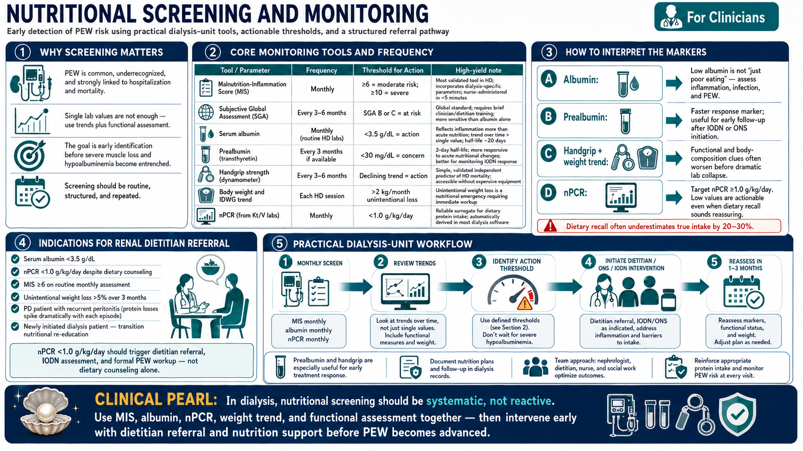
Protein Targets — Guideline Concordance
| Guideline | Year | HD Target | PD Target | Notes |
|---|---|---|---|---|
| KDOQI Nutrition in CKD | 2020 | ≥1.2 g/kg/day | ≥1.2–1.3 g/kg/day | Use adjusted BW if obese; higher in acute illness or hypercatabolic states |
| KDIGO CKD | 2024 | ≥1.2 g/kg/day | ≥1.2–1.3 g/kg/day | Consistent with KDOQI; emphasizes individualization |
| ISRNM Consensus | 2017 | ≥1.2 g/kg/day | ≥1.2–1.3 g/kg/day | May increase during infection, surgery, or peritonitis episodes |
| ESPEN Renal | 2021 | 1.2–1.4 g/kg/day | 1.2–1.5 g/kg/day | Recommends individualized renal dietitian-led assessment |
Body Weight Adjustment
Use actual body weight (ABW) for normal and underweight patients. For obese patients (BMI >30), use adjusted body weight: IBW + 0.25 × (ABW − IBW). Do not use ABW in obese patients — this overestimates protein requirements and increases metabolic burden.
Using nPCR as a Surrogate for Protein Intake
Normalized protein catabolic rate (nPCR), derived from the Kt/V calculation using pre- and post-dialysis urea values, provides a reliable monthly surrogate for dietary protein intake. Target nPCR ≥1.0 g/kg/day. Values below this threshold are clinically actionable regardless of what the patient reports eating — dietary recall consistently underestimates true intake by 20–30%.
Clinical Red Flag
nPCR <1.0 g/kg/day = inadequate protein intake. This is an actionable lab finding that should trigger dietitian referral, intradialytic oral nutrition assessment, and a formal PEW workup — not simply dietary counseling alone.
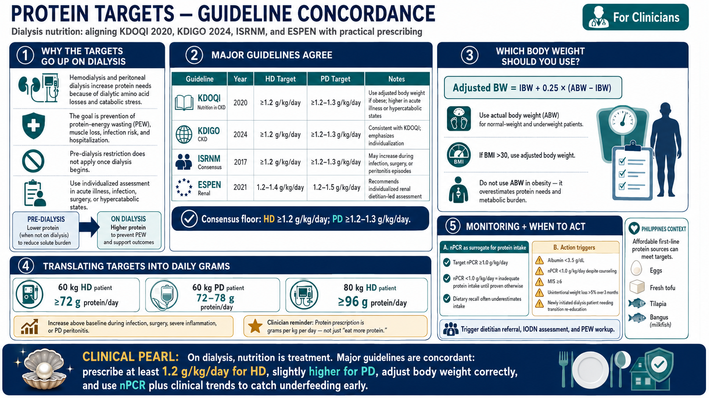
Oral Nutritional Supplements (ONS)
Indications for ONS Prescription
- Serum albumin <3.5 g/dL with exclusion of acute infection/inflammation as primary cause
- nPCR <1.0 g/kg/day for ≥2 months despite dietary counseling
- MIS ≥6 on routine screening
- Confirmed PEW by ISRNM criteria
- Post-hospitalization nutritional rehabilitation (albumin often drops 0.3–0.5 g/dL during any admission)
The Pre-Dialysis vs. Dialysis Protein Inversion — LP vs. HP Formula Selection
The single most important prescribing decision in renal ONS is not brand selection but recognizing which side of the dialysis threshold the patient is on. The LP/HP convention describes the percentage of energy derived from protein — not an absolute gram cutoff:
- LP (low-protein) formulas derive ~6–10% of energy from protein (~5–10 g protein/serving). Appropriate for non-dialysis CKD G3b–G5 targeting 0.55–0.60 g/kg/day — a calorie-dense, protein-sparing supplement that maintains energy without adding excess nitrogen or mineral load.
- HP (high-protein) formulas derive ~18–20% of energy from protein (~13–21 g/serving). Appropriate for HD/PD patients targeting ≥1.2 g/kg/day — engineered to replace dialytic amino acid losses with high-BV protein while restricting K and PO₄.
- The transition moment: dialysis initiation requires explicit dietary re-education and formula switch. Continuing a pre-dialysis LP formula in a newly started dialysis patient is a common and consequential iatrogenic error.
Comparative Specifications — Products Available or Encountered in Philippine Practice
| Product | Format | Energy density | Protein / serving | Renal K/PO₄ engineering | Dialysis indication | Notes |
|---|---|---|---|---|---|---|
| Nepro HP (Abbott) | RTD 237 mL bottle | ~1.8 kcal/mL (~401 kcal) | ~17.8–19.1 g | Yes — K restricted, PO₄ restricted | HD & PD | Gold-standard renal HP formula; GI 35; MUFA + omega-3; widely available Mercury Drug, Watsons, hospital pharmacies |
| Nepro LP (Abbott) | RTD 237 mL bottle | ~1.8 kcal/mL (~401 kcal) | ~9.9–10.6 g | Yes — renal-specific pre-dialysis | Non-dialysis CKD only | Pre-dialysis LP equivalent; GI 44; switch to HP at dialysis initiation |
| Suplena (Abbott) | RTD 235 mL can | 1.8 kcal/mL (~425 kcal) | ~10.6 g | Yes — renal-specific pre-dialysis | Non-dialysis CKD only | Functionally equivalent to Nepro LP; CARBSTEADY low-GI blend; for pre-dialysis protein sparing |
| Novasource Renal (Nestlé) | RTD 200–237 mL | 2.0 kcal/mL | ~19–21 g | Yes — renal-specific HP | HD, PD, AKI on RRT | Highest caloric density among RTDs; L-carnitine, taurine; preferred in fluid-restricted/oligoanuric patients |
| Renilon 7.5 (Nutricia) | RTD 125 mL bottle | ~2.0 kcal/mL (~250 kcal) | ~9.4 g | Yes — renal-specific | HD (low-volume option) | Very small volume — ideal for strict fluid restriction; 2–3 bottles/day for dialysis patients |
| Renilon 4.0 (Nutricia) | RTD 125 mL bottle | ~2.0 kcal/mL (~250 kcal) | ~4.8 g | Yes — renal-specific LP | Non-dialysis CKD only | Pre-dialysis, very low protein fraction; minimal fluid burden |
| Fresubin Renal (Fresenius Kabi) | RTD 200 mL | 2.0 kcal/mL (~400 kcal) | ~6 g | Yes — renal-specific LP | Non-dialysis CKD only | Most aggressively LP of the RTD group (~6% kcal from protein); suitable as sole-source calorie supplement on strict LPD; fish oil, reduced electrolytes |
| Kidneypro HP (Macropharma PH) | Powder sachet 32 g | ~156 kcal / sachet | 9.80 g / sachet (19.6 g at 2 sachets) | Yes — PO₄ 80 mg, K 80.32 mg per sachet | HD (supplement) | Philippine-distributed; sucrose-free; contains carnitine, taurine, ALA; 2 sachets/day per label — supplement only, not sole-source; uptitrate for PEW |
| Kidneypro LP (Macropharma PH) | Powder sachet 32 g | ~175.7 kcal / sachet | 5.25 g / sachet (10.5 g at 2 sachets) | Yes — same electrolyte backbone as HP | Non-dialysis CKD only | Pre-dialysis protein-sparing; higher CHO fraction than HP; switch to HP variant at dialysis initiation |
| Nephrisol-D (dialysis) | Powder serving | ~1.04 kcal/mL (~260 kcal) | ~13 g | Yes — reduced electrolytes | HD & PD | Whey + amino acids + Ca caseinate; lactose-free; cost-effective powder alternative to RTD HP formulas |
| Nephrisol (pre-dialysis) | Powder serving | ~1.0 kcal/mL (~260 kcal) | ~4.5 g | Yes — reduced electrolytes | Non-dialysis CKD only | EAA:NEAA premix; high biologic value; inulin; switch to Nephrisol-D at dialysis initiation |
| ONCE Renal | Powder 76 g → 200 mL | ~1.8 kcal/mL | ~7 g | Yes — pre-dialysis renal | Non-dialysis CKD | Isomaltulose, Fibersol-2, FOS; pre-dialysis protein sparing supplement |
| Diben Drink (Fresenius Kabi) | RTD 200 mL | 1.5 kcal/mL (~300 kcal) | 15 g | No — NOT K/PO₄ restricted | Diabetic CKD (caution) | Diabetes-specific only (low-GI, MUFA, fish oil); use in CKD only if glycemia is the primary concern and K/PO₄ managed by other means; not renal-modified |
| Glucerna (Abbott) | RTD 237 mL | ~1.0 kcal/mL | ~10.2 g | No — NOT K/PO₄ restricted | Diabetic non-dialysis CKD only | Slow-release low-GI carbohydrate; acceptable in non-dialysis CKD where glycemia dominates; not a renal formula; use with explicit K/PO₄ surveillance |
| Regular Ensure (Abbott) | RTD 230 mL | ~1.0 kcal/mL | ~8.6 g | No — general ONS, no modification | Last resort / fallback only | Not a renal formula; higher K and PO₄ than renal-specific products; use only when no renal formula is available or affordable; requires K/PO₄ surveillance, binder adjustment, dietitian oversight |
Kidneypro LP vs. HP — Philippine Label Comparison (per 32 g sachet)
| Parameter | Kidneypro LP (pre-dialysis) | Kidneypro HP (dialysis) | Clinical note |
|---|---|---|---|
| Energy | 175.7 kcal | 156.16 kcal | LP slightly more calorie-dense — prioritizes energy over protein (protein sparing) |
| Protein | 5.25 g | 9.80 g | Core differentiator — switch to HP at dialysis initiation |
| Carbohydrate | 18.9 g | 11.81 g | Higher CHO in LP to spare protein on restricted diet |
| Added sugar | 0 g | 0 g | Sucrose-free — favorable in diabetic CKD/ESKD |
| Fat (of which MUFA) | 9.21 g (6.83 g) | 8.22 g (5.95 g) | High-MUFA; cardiorenal-favorable lipid profile |
| Sodium | 51.52 mg | 51.52 mg | Low — renal appropriate |
| Potassium | 80.32 mg | 80.32 mg | Low — shared electrolyte backbone; total load at 2 sachets = ~161 mg K (vs. 250–370 mg in non-renal ONS) |
| Phosphorus | 80.00 mg | 80.00 mg | P:protein ratio ~15 mg/g (LP) vs ~8 mg/g (HP) — HP's ratio is favorable vs. ordinary food protein (~12–16 mg/g) |
| L-carnitine | 36 mg | 33 mg | Relevant to dialysis-associated carnitine depletion |
| Alpha-lipoic acid | 9 mg | 10 mg | Antioxidant — mitigates uremic oxidative stress |
| Taurine | 16 mg | 15 mg | Conditionally essential in ESKD |
| Vitamin D3 | 58 IU (1.45 mcg) | 58 IU (1.45 mcg) | Supplemental only — not a substitute for prescribed active vitamin D |
Kidneypro HP Dosing-Adequacy Caveat
At the label-specified 2 sachets/day, Kidneypro HP delivers only ~19.6 g protein and ~312 kcal/day — appropriate as a supplement, not sole-source nutrition for a 60 kg dialysis patient requiring ~72 g protein/day. For confirmed PEW or poor oral intake, uptitrate under dietitian supervision or pair with a modular protein add-on. Re-tally total K and PO₄ against the formula load and the rest of the diet whenever dose is increased. The included "phosphate binder blend" claim on the label should not substitute for prescribed phosphate binders in hyperphosphatemic patients.
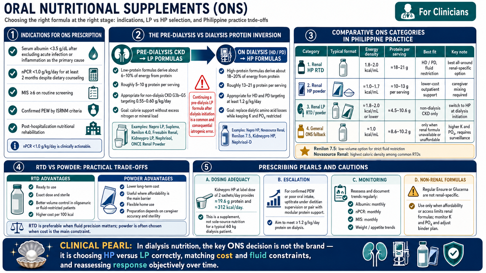
RTD vs. Powder — Practical Trade-off in Philippine Practice
| RTD (Nepro HP, Novasource, Renilon) | Powder (Kidneypro HP, Nephrisol-D) | |
|---|---|---|
| Cost per 100 kcal | Higher | Lower — significant for long-term outpatient use |
| Caloric density | 1.5–2.0 kcal/mL — superior for fluid restriction | ~1.0–1.7 kcal/mL depending on water volume used |
| Preparation | Ready to use; exact dose; sterile | Caregiver-dependent reconstitution; sterility not guaranteed after mixing |
| Fluid control | Precise volume per bottle | Variable depending on water added — harder to control in oligoanuric patients |
| Shelf stability | Longer unopened; once opened, 24h refrigerated | Longer — dry powder; good for home use |
| Best fit | Oligoanuric/fluid-restricted dialysis patients; IODN protocol; caregiver-limited households | Long-term supplementation where cost is a primary barrier; patients with good caregiver compliance |
Intradialytic ONS Delivery — Protocol Summary
When IODN is indicated, administer ONS at the start of the dialysis session (first 30–60 minutes). Target 250–500 kcal and 15–25 g protein per session. Document in nursing records. Account for ONS volume (~200–240 mL per serving) in the daily fluid prescription. Reassess at 3 months using prealbumin and handgrip strength — these respond faster than albumin and are better indicators of early nutritional response. Lack of response at 3 months warrants assessment for secondary causes of PEW (occult infection, malignancy, cardiac cachexia, inadequate dialysis dose).
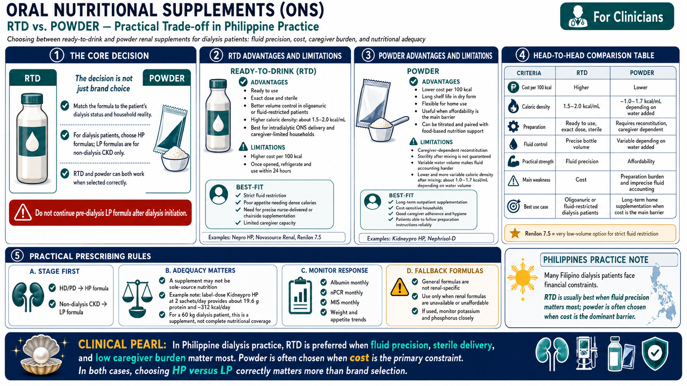
Intradialytic Oral Nutrition (IODN)
The ISRNM 2020 Consensus Statement recommends intradialytic oral nutritional supplementation as the first-line nutritional intervention for HD patients with confirmed or at-risk PEW. This recommendation is based on the concept of the HD anabolic window: insulin sensitivity and peripheral amino acid uptake are increased during hemodialysis due to dialysis-associated circulatory and hormonal shifts. Providing substrate during this window augments net protein synthesis compared to fasted dialysis.
Evidence Summary
- Multiple RCTs demonstrate IODN improves serum albumin (+0.2–0.4 g/dL), prealbumin, handgrip strength, and body weight in malnourished HD patients
- JAPEN Study (Japan): intradialytic ONS significantly improved nutritional markers in malnourished HD patients over 6 months
- Korean and Taiwanese registry data support improved survival trends with intradialytic nutritional support in PEW patients
- FINE-D Trial: IODN combined with exercise improved lean body mass and physical function beyond nutrition alone
IODN Protocol
Indication
Serum albumin <3.5 g/dL, nPCR <1.0 g/kg/day, MIS ≥6, confirmed PEW, or post-hospitalization nutritional rehabilitation.
Timing
Administer ONS at the start of the HD session — not mid-session. Earlier timing reduces intradialytic hypotension risk by allowing digestive blood flow to normalize before the hemodynamic stress of mid- to late-session fluid removal peaks.
Target dose
250–500 kcal and 15–25 g protein per session. At 3× weekly, this provides 750–1,500 kcal and 45–75 g additional protein per week — sufficient to reverse mild-to-moderate PEW when combined with oral dietary improvements.
Duration and monitoring
Minimum 3 months continuous; reassess albumin, prealbumin, handgrip strength, and body weight at 3 months. Document IODN in nursing notes and monitor IDWG — commercial ONS contributes approximately 200–240 mL fluid per serving.
Intradialytic Hypotension Risk
IODN is associated with a modest increase in intradialytic hypotension events (~5% additional episodes in RCTs). This risk is outweighed by nutritional benefit in confirmed PEW. Start timing at session initiation, avoid large-volume meals, and monitor BP response in the first 1–2 sessions. The presence of tunneled catheters requires strict nursing hygiene protocols during eating — check your center's infection control policy.
Philippine Implementation Gap
Most Philippine dialysis units currently lack formal IODN protocols. Establishing one requires coordination between nephrology, nursing, and pharmacy — a relatively low-resource intervention given that the primary "equipment" is a commercially available oral supplement and a nursing policy document. Centers with high PEW burden should consider this a quality improvement priority.
The Opposite Problem: Intradialytic Junk Food and Its Consequences
While the clinical literature focuses on the benefits of appropriate IODN, a parallel and largely undocumented phenomenon warrants explicit attention in the Philippine context: patients who use the dialysis session as an occasion to eat junk food, fast food, and sodas under the belief that the machine "neutralizes" whatever they consume. This misconception is prevalent and clinically consequential across three mechanisms.
Mechanism 1 — Postprandial Splanchnic Steal and Intradialytic Hypotension
Large intradialytic meals trigger postprandial mesenteric vasodilation — a physiologic redistribution of cardiac output to the splanchnic circulation. In healthy individuals this is compensated by increased heart rate and peripheral vasoconstriction. In HD patients, simultaneous ultrafiltration is depleting intravascular volume, autonomic dysfunction blunts compensatory vasoconstriction, and cardiac reserve is frequently impaired by LV hypertrophy or ischemic cardiomyopathy. The summation — splanchnic pooling + UF-driven intravascular depletion + impaired autonomic compensation — substantially increases intradialytic hypotension (IDH) risk. The largest meals carry the highest IDH burden. High-fat content is particularly implicated: fat delays gastric emptying and prolongs mesenteric vasodilation well into the mid-session period when UF rate is typically highest. The IODN protocol addresses this by recommending small-volume, early-session feeding — the opposite of a large late-session fast food meal.
Mechanism 2 — Inorganic Phosphate Kinetics Outpace Dialytic Clearance
Standard HD removes approximately 800–1,000 mg phosphate per session over 4 hours — a rate of ~200–250 mg/hour. Inorganic phosphate additives in processed foods and phosphoric acid in cola beverages are absorbed at 90–100% efficiency within 30–60 minutes of ingestion, producing an acute phosphate load that can exceed 300–600 mg in a single serving. The machine cannot clear this load as fast as it is delivered. The net result is an intradialytic phosphate spike that may not be fully corrected by session end. Patients who regularly eat processed food during dialysis have systematically higher post-session phosphate levels and are more likely to be managed with escalating binder doses without recognizing the dietary exposure as the primary driver. Organic (animal) phosphate from fresh protein absorbs at 40–60% and more slowly — demonstrating that it is not simply total phosphate content but bioavailability and absorption kinetics that determine intradialytic impact.
Mechanism 3 — Processed Food Amplifies the Dialysis-Associated Inflammatory Response
Each HD session triggers an acute inflammatory response: contact of blood with the dialyzer membrane activates complement and induces monocyte-derived cytokine release (IL-6, TNF-α, IL-1β). Advanced glycation end products (AGEs) — heavily concentrated in fried, grilled, and ultra-processed foods — activate NF-κB and RAGE receptors, amplifying this same inflammatory cascade. Dialysis patients carry an already-elevated circulating AGE burden from impaired renal clearance. Ingestion of additional exogenous AGEs (fast food, processed meats, cola-caramelized products) during the session amplifies an inflammatory response already in progress, with downstream effects on endothelial function, oxidative stress, and cardiovascular event risk. Dietary AGE restriction is independently associated with lower CRP and IL-6 in ESKD populations and should be addressed as part of routine nutritional counseling.
Practical Counseling Points for Filipino Dialysis Centers
- Explicitly counsel every dialysis patient at initiation that dialysis does not neutralize food quality — the misconception is near-universal and will not correct itself
- Address the specific local foods patients actually bring: Jollibee/McDonald's meals, bottled cola, chips, and instant noodles — not hypothetical Western foods
- Frame the recommendation positively: "bring this instead" (a small sandwich, 2 hard-boiled eggs, or a renal ONS) rather than a list of prohibitions alone
- Educate nursing staff to recognize and discourage large intradialytic meals as an IDH risk management intervention — not purely a dietary concern
- If a patient experiences recurrent IDH episodes, dietary history specifically addressing intradialytic food intake is a first-line investigation step before adjusting UF profiles or prescribing midodrine
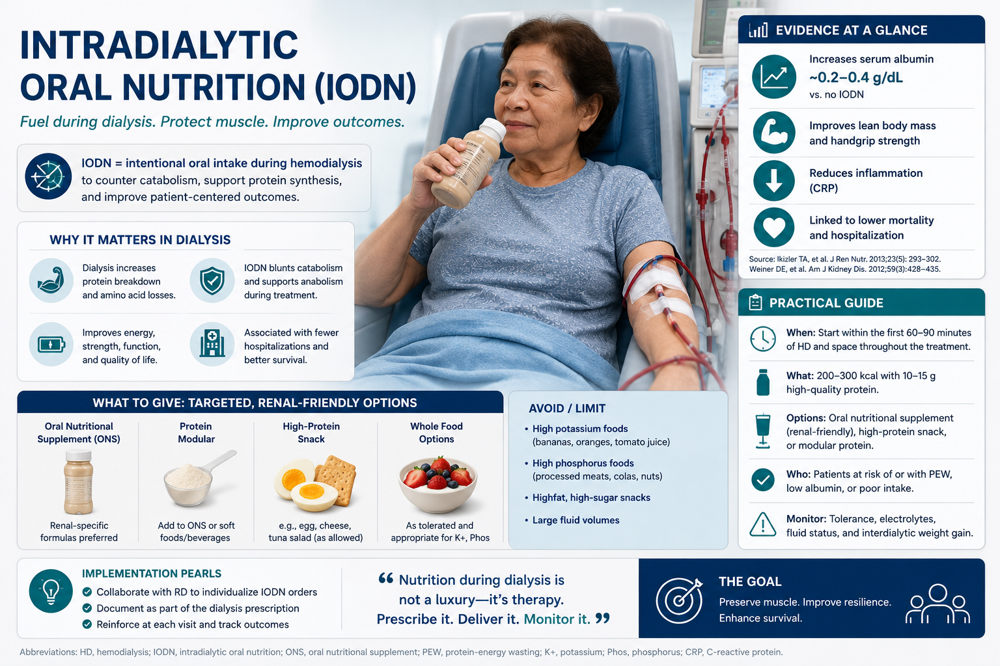
Phosphorus Management — Beyond Simple Restriction
Phosphorus Bioavailability Hierarchy
| Phosphorus Type | Sources | Absorption | Clinical Implication |
|---|---|---|---|
| Inorganic additives | Polyphosphates in processed meats; phosphoric acid in cola; sodium phosphate in instant noodles, flavored snacks, powdered drinks | 90–100% | Highest risk; primary restriction target; Philippine food labeling does not distinguish additive from natural phosphorus |
| Animal organic | Fresh meat, poultry, fish, eggs, dairy | 40–60% | Moderate risk; management via binder timing rather than severe restriction |
| Plant organic | Legumes, seeds, whole grains, nuts | 20–40% | Lowest risk; phytate binding reduces absorption; humans lack phytase enzyme |
The clinical implication is that blanket restriction of fresh protein sources in favor of processed alternatives — a common pattern when patients substitute real meat with processed meat products — is counterproductive. KDIGO MBD 2017 is explicit: restrict dietary phosphorus when elevated, but not at the expense of adequate protein intake.
Phosphate Binder Selection — Philippines Formulary
| Agent | Class | Approx. Cost (PH) | Timing | Preferred Use | Caution |
|---|---|---|---|---|---|
| Calcium carbonate (generic) | Ca-based | ₱2–5/tablet | With meals (first bites) | First-line; most affordable; widely available | Avoid if serum Ca >10.2 mg/dL, Ca×PO₄ product elevated, or evidence of vascular calcification |
| Sevelamer (Renvela) | Non-Ca polymer | ₱50–80/tablet | With meals | Elevated calcium, calcification on imaging, high LDL | GI side effects (constipation, nausea); capsule must not be crushed |
| Lanthanum carbonate (Fosrenol) | Non-Ca, non-Mg | ₱80–120/tablet | Chew with meals | Ca-overload, poor compliance with tablet burden | Must be chewed — not swallowed whole; long-term lanthanum tissue deposition data reassuring but limited |
| Aluminum hydroxide | Al-based | Low | With meals | Short-term refractory hyperphosphatemia only (maximum 4 weeks) | Aluminum-related bone disease, myopathy, dialysis encephalopathy with chronic use — DO NOT use long-term |
Aluminum Binder Warning
Aluminum-containing antacids (Aludrox, Amphojel) are still used informally as phosphate binders in some Philippine dialysis settings due to low cost and availability. Prolonged use causes aluminum-related osteodystrophy, proximal myopathy, and dialysis encephalopathy — all of which may be mistaken for dialysis-related complications rather than drug toxicity. Identify these patients, check serum aluminum levels if in doubt, and transition to appropriate binders immediately.
Dialysate phosphorus removal: Standard hemodialysis removes approximately 800–1,000 mg of phosphorus per session. High-flux dialysis and extended HD (5–6 hours) remove more. This removal — roughly 2,400–3,000 mg/week with standard 3× HD — is a component of total phosphorus management and should factor into dietary phosphorus prescriptions alongside binder therapy.
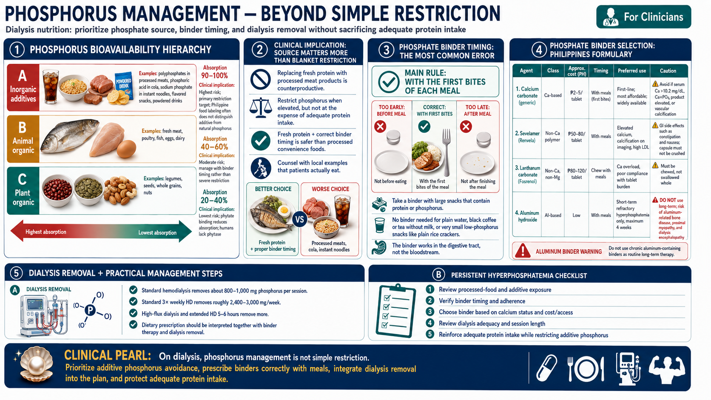
Potassium — Individualized Management
KDOQI 2020 does not endorse a universal dietary potassium restriction for HD patients. Individualization based on pre-dialysis serum K trends and patient-specific variables is the recommended approach. The clinical target is pre-dialysis serum K of 4.0–5.5 mEq/L — recognizing that pre-HD values naturally run higher than post-HD values, and that post-HD hypokalaemia (<3.0 mEq/L) is an independent mortality risk.
Key Determinants of Potassium Balance in HD
- Residual renal function (RRF) — each liter of daily urine output removes ~60–80 mEq K
- Interdialytic weight gain — rapid fluid shifts affect K distribution
- Dialysis session frequency and Kt/V adequacy
- Gastrointestinal K excretion — significantly impaired by constipation
- Medications: ACEi, ARBs, spironolactone, TMP-SMX, non-selective beta-blockers, NSAIDs all elevate K
- Metabolic acidosis — acidosis shifts K extracellularly (+0.5 mEq/L per 0.1 pH unit decrease)
Management Ladder for Persistent Hyperkalemia
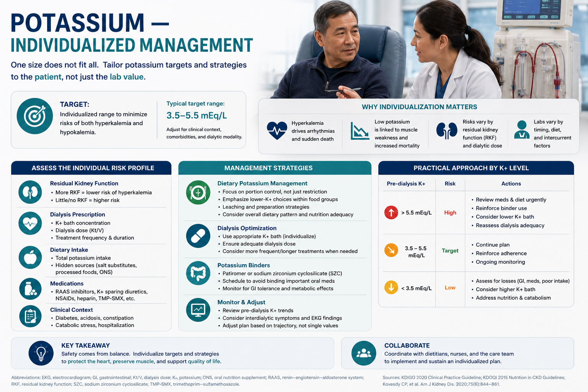
Water-Soluble Vitamin Losses in HD
Each hemodialysis session removes clinically significant amounts of water-soluble vitamins. At 3× weekly HD, cumulative losses are substantial enough to produce deficiency states over months if not supplemented.
| Vitamin | Lost per Session | Clinical Deficiency Risk | Recommendation |
|---|---|---|---|
| Thiamine (B1) | Moderate | Peripheral neuropathy, cardiac failure (Wernicke's in malnourished) | Supplement daily with B-complex |
| Pyridoxine (B6) | Significant | Peripheral neuropathy, dermatitis, elevated homocysteine | Supplement daily with B-complex |
| Folate | Significant | Macrocytic anemia, hyperhomocysteinemia | 1 mg folate daily (included in most B-complex formulas) |
| Vitamin C | Significant | Scurvy features in severely restricted patients | 60–100 mg/day only — not megadose |
| Vitamin B12 | Minimal | Low risk unless dietary intake poor | Include in B-complex supplementation |
Do NOT Supplement These in Dialysis Patients
- Vitamin A: Accumulates in renal failure — retinol-binding protein is not cleared; supplementation leads to toxicity (hepatotoxicity, pseudotumor cerebri, teratogenicity in women of reproductive age)
- Vitamin C >200 mg/day: Metabolized to oxalate — secondary oxalosis with calcium oxalate deposition in soft tissues and vessels
- Fat-soluble vitamins (D, E, K): Supplement only with specific clinical indication and laboratory monitoring
Standard OTC Multivitamins Are Inappropriate
Generic multivitamins marketed to the general public contain vitamin A (often as retinol or beta-carotene) and frequently exceed safe vitamin C levels for dialysis patients. Prescribe renal-specific water-soluble vitamin formulas or supplement the individual vitamins. Instruct patients explicitly to avoid standard multivitamins.
Zinc supplementation: Consider in patients with dysgeusia (altered taste — common cause of poor appetite in dialysis), poor wound healing, or low serum zinc. 50 mg elemental zinc daily × 3 months, then reassess. Do not supplement indefinitely without monitoring — zinc excess interferes with copper absorption.
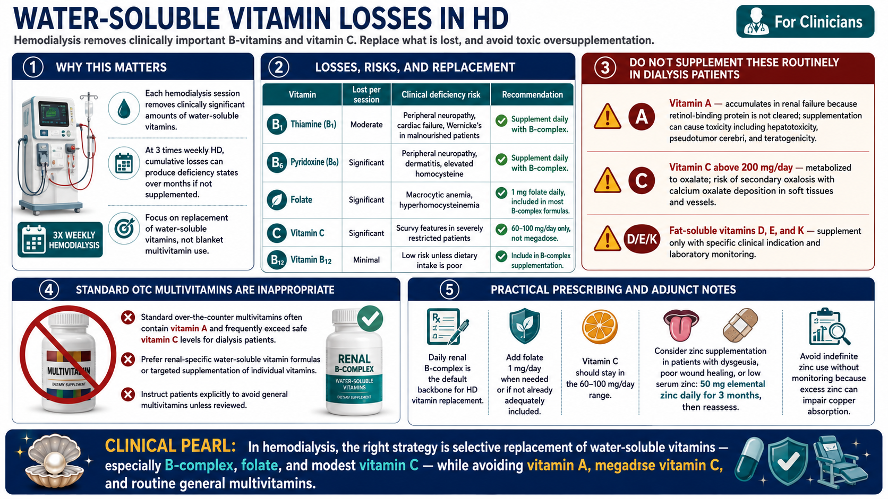
Asian and Philippine-Specific Context
DOPPS (Dialysis Outcomes and Practice Patterns Study) Phase 5 — Asia: HD patients in Southeast Asia have lower mean BMI and higher PEW prevalence than Western cohorts. Lower dietary protein intake is identified as a key driver — partly attributable to economic factors, partly to inadequate dietary re-education at dialysis initiation. Malnutrition-related mortality in Philippine dialysis patients is likely underreported as it is commonly attributed to infection or cardiovascular disease rather than the underlying nutritional state that permitted these complications.
Key Food-Specific Considerations
| Food / Ingredient | Relevance | Clinical Guidance |
|---|---|---|
| White rice | Dietary staple; patients often fear it is "bad" | Low potassium, low phosphorus — safe; lower phosphorus than brown rice; eating rice does not worsen dialysis outcomes |
| Brown rice / whole grains | Promoted as "healthier" by general nutritional advice | Higher phytate-bound phosphorus than white rice — not superior for dialysis patients; may actually increase phosphorus load despite lower bioavailability |
| Bagoong / patis / toyo | Near-universal use as flavoring agent | Patis ≈ 1,500 mg sodium per tablespoon; acceptable as a small condiment accent; should not be a primary seasoning or table sauce |
| Malunggay (Moringa oleifera) | Heavily marketed locally as a nutritional superfood | Potassium ~337 mg/100 g fresh leaves — caution in anuric or hyperkalemic HD patients; small boiled amounts acceptable in patients with residual function and controlled K |
| Buko juice | Perceived as a natural, healthful drink | Very high potassium; multiple documented fatalities in anuric PH dialysis patients; patients require explicit counseling against it at dialysis initiation |
| Sambong (Blumea balsamifera) | DOH-approved herbal; patients ask about it | Approved for urolithiasis/diuresis in pre-CKD; no evidence for benefit in ESKD; not contraindicated; mechanism not relevant once anuric |
Protein Sources and Socioeconomic Accessibility
A significant proportion of Filipino dialysis patients are PhilHealth indigent members or face significant financial hardship. Nutritional recommendations must be cost-conscious and grounded in local food availability. The most accessible high-quality protein sources are eggs (₱7–10 each), fresh tofu (₱30–50 per block), and fresh tilapia or bangus (₱80–150/kg). These three sources alone can meet protein targets for most patients without requiring expensive commercial supplements as a first-line approach.
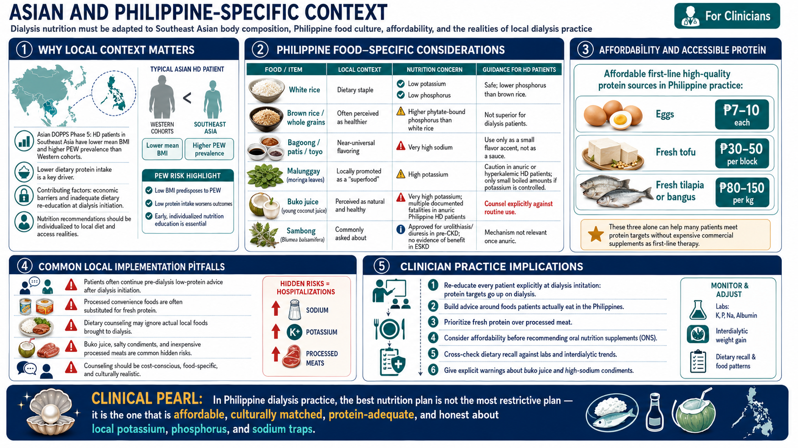
Quick Reference Card
Dialysis Nutrition — At a Glance
- Protein (HD): ≥1.2 g/kg/day (adjusted BW if obese)
- Protein (PD): ≥1.2–1.3 g/kg/day
- Calories: 30–35 kcal/kg/day
- Phosphorus: Restrict inorganic additives; take binder WITH first bites of each meal
- Potassium: Individualize; pre-HD target 4.0–5.5 mEq/L
- Sodium: <2.3 g/day (reduces thirst and IDWG)
- Fluid (HD): Urine output + 500 mL/day; 500–800 mL/day if anuric
- Vitamin C: Max 60–100 mg/day — no megadose
- Vitamin A: Do NOT supplement
- IODN: 250–500 kcal + 15–25 g protein/session at start of HD (ISRNM recommendation)
- PEW screening: MIS monthly; albumin monthly; nPCR monthly
- K binders available in PH: Kalimate (CPS, Kowa); Kayexalate/Resonium A (SPS)
- Patiromer / SZC: NOT available in Philippines
- Dietitian referral: Albumin <3.5, nPCR <1.0, MIS ≥6, >5% weight loss/3 months
W Rivero, MD, FPCP, DPSN
Specialist in Internal Medicine, Nephrology, and Clinical Nutrition. Practicing integrative and evidence-based nephrology across Quezon City, Pampanga, and Bulacan.Espesyalista sa Panloob na Medisina, Nefrolohiya, at Klinikal na Nutrisyon. Nagpapraktis ng integratibo at ebidensya-batay na nefrolohiya sa Quezon City, Pampanga, at Bulacan.Espesyalista sa Internal nga Medisina, Nefrolohiya, ug Klinikal nga Nutrisyon. Nagpraktis og integratibo ug ebidensya-base nga nefrolohiya sa Quezon City, Pampanga, ug Bulacan.Espesyalista king Panloob na Medisina, Nefrolohiya, at Klinikal na Nutrisyon. Nagpapraktis ning integratibo at ebidensya-base na nefrolohiya sa Quezon City, Pampanga, at Bulacan.

Scan and saveI-scan at i-saveI-scan ug i-saveI-scan at i-save